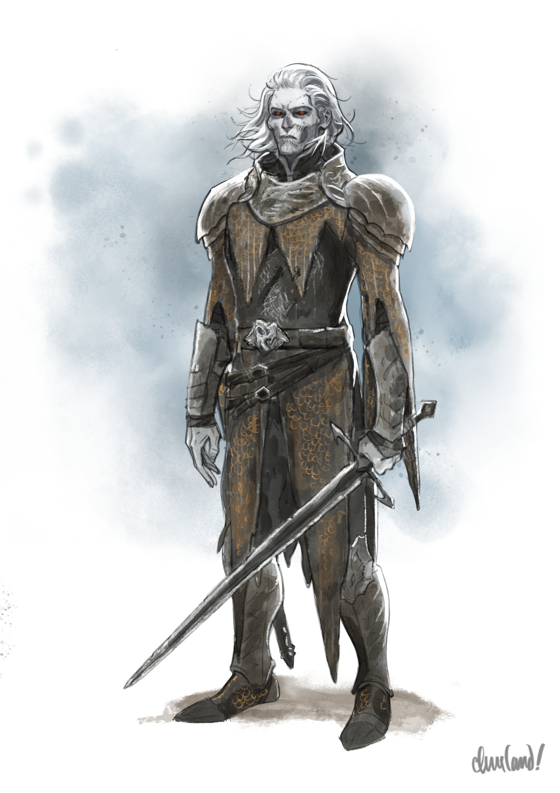
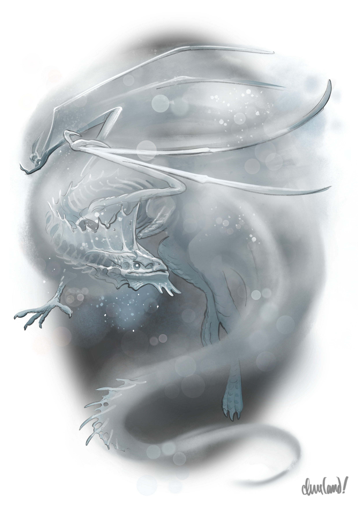
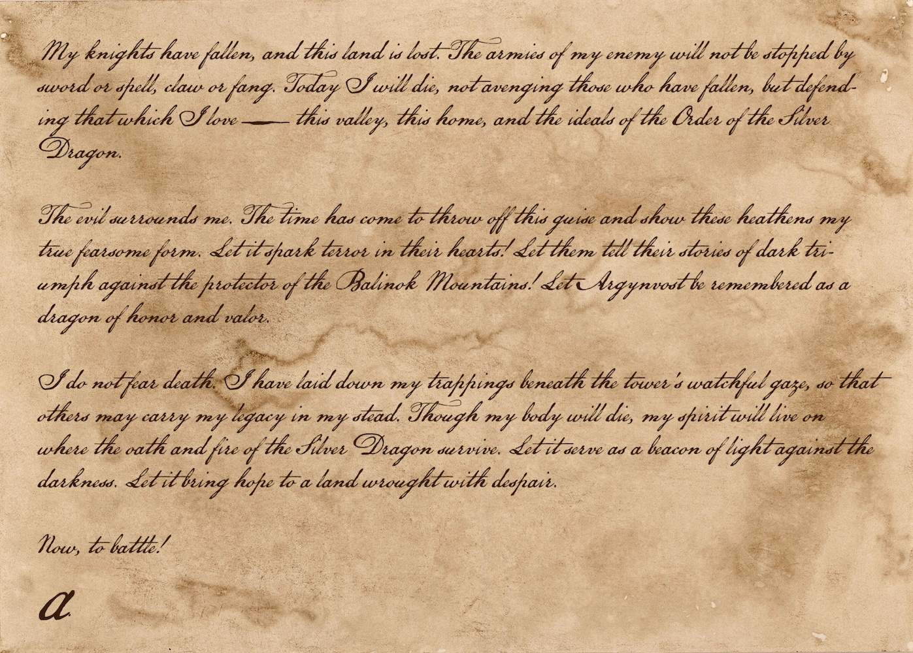
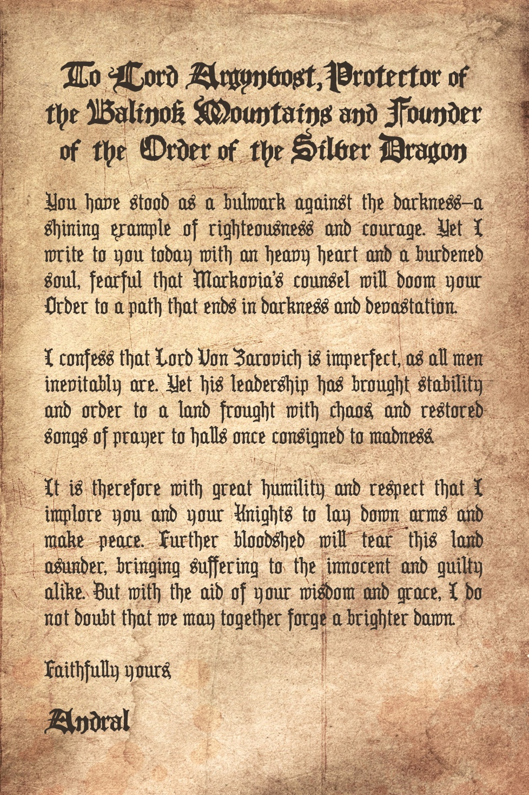

_Uma aventura para cinco personagens de 4º, 5º ou 6º nível._
Neste arco, ao chegarem à mansão de Argynvostholt, conforme sugerido pelos revenantes de Tser Falls ou do Raven River Crossroads, os jogadores encontram Sir Godfrey Gwilym, um antigo cavaleiro revenante da Ordem do Dragão Prateado.
Godfrey informa solenemente aos jogadores que, por estar vinculado à vontade de seu comandante, Vladimir Horngaard, ele não pode oferecer-lhes nenhuma ajuda em sua luta contra Strahd. Ele pode compartilhar, contudo, que o espírito adormecido do dragão de prata Argynvost — o falecido líder de sua Ordem — despertou nas últimas semanas, e que o dragão está em busca de heróis dispostos a enfrentar Strahd, embora Godfrey não saiba com qual propósito.
Embora Godfrey não consiga ouvir a voz do próprio Argynvost, ele incentiva os jogadores a explorarem a mansão e buscarem as pistas deixadas pelo espírito do dragão, conversando com os outros fantasmas da mansão — embora ele os avise para evitarem a sala de audiências do próprio Comandante Horngaard.
Godfrey também avisa os jogadores para terem cautela com os espíritos amaldiçoados que ainda assombram os corredores da mansão: soldados que caíram defendendo a mansão dos exércitos de Strahd há muito tempo, e que nunca deixaram de lutar contra invasores. Caso os jogadores queiram se proteger desses espíritos, Godfrey os aconselha a viajar até uma vala comum ao norte de Berez, onde podem obter parafernália com a insígnia da Ordem do Dragão Prateado.
Enquanto exploram Argynvostholt, os jogadores podem encontrar Zorya, o espírito do falecido familiar pseudodragão de Argynvost; Minodora, o espírito de uma antiga escrivã da Ordem do Dragão Prateado; e Irmão Marek, o espírito do antigo capelão da Ordem. A orientação dos espíritos levará os jogadores até o farol de Argynvost, onde o espírito de Argynvost se esconde dentro de uma gárgula em forma de dragão de prata.
Para invocar o espírito de Argynvost, contudo, os jogadores devem obter e recitar em voz alta o juramento da Ordem do Dragão Prateado e acender o braseiro da gárgula com chamas prateadas obtidas de Zorya ou do túmulo de Argynvost. Entretanto, o próprio Vladimir Horngaard vigia o farol elevado da mansão. Se os jogadores quiserem conhecer a vontade de Argynvost, devem primeiro tranquilizar Horngaard de que não representam ameaça a ele ou a Strahd — ou então derrotar Horngaard em combate.
Da gárgula, os jogadores podem obter uma profecia enigmática que os direciona a devolver os ossos de Argynvost ao seu devido lugar em sua cripta. Para isso, contudo, eles devem primeiro recuperar seus restos mortais das profundezas do Castelo Ravenloft.
Se os jogadores retornarem a Argynvostholt após recuperar com sucesso o crânio de Argynvost, terão de abrir caminho à força contra Vladimir e seus guarda-costas guerreiros fantasmas para devolver os restos do dragão ao seu devido lugar. Caso tenham êxito, o espírito de Argynvost acende o farol no topo da mansão obscurecida, trazendo luz e esperança a todos os cantos de Barovia, e permitindo que os cavaleiros da Ordem do Dragão Prateado encontrem descanso e paz abençoada.
Dois encontros de combate neste arco — a batalha com os guerreiros fantasmas e a possível batalha com Vladimir Horngaard — foram equilibrados para um grupo de cinco jogadores de 6º nível, mais Ezmerelda e Ireena. Grupos sem Ezmerelda e/ou abaixo do 6º nível provavelmente não conseguirão superar esses encontros. Por isso, todos os jogadores receberam uma rota não combativa para contornar os guerreiros fantasmas, uma rota social para contornar Vladimir Horngaard, e uma salvaguarda de "fracasso com progresso" caso ocorra um TPK contra Vladimir Horngaard.
M1. Estrada para Argynvostholt
Quando os jogadores chegarem ao caminho que liga a Velha Estrada Svalich a Argynvostholt, leia:
Uma trilha de terra se ramifica aqui da Velha Estrada Svalich, serpenteando para o sul, subindo um esporão montanhoso escarpado. A terra do caminho é bem compactada, sua cor num cinza-acastanhado pálido que lembra cinzas frias. As árvores em ambos os lados permanecem silenciosas e estoicas, suas folhas de um verde desbotado. À medida que a trilha sobe, é eventualmente substituída pelas sombras profundas da encosta florestada da montanha, desaparecendo na penumbra do bosque além.
A jornada da Velha Estrada Svalich até Argynvostholt tem três quilômetros de extensão e leva quarenta minutos. Aproximadamente na metade do caminho, os jogadores são recebidos por um cavaleiro revenante da Ordem do Dragão Prateado montando guarda no bosque. Leia:
Algo se move em meio à linha de árvores, e uma figura vestida com armadura enferrujada surge da vegetação rasteira.
A figura é reconhecidamente semelhante aos revenantes que montam guarda em Tser Falls e no Raven River Crossroads.
O revenante saúda os jogadores e pede que se identifiquem e expliquem seus propósitos. Se informado de que vieram em busca de Sir Godfrey Gwilym, ele fecha os olhos e murmura com gratidão: "Então ainda há quem se oponha ao reinado de Zarovich. Ótimo."
O revenante pode informar aos jogadores que Sir Godfrey aguarda visitantes na Chapel of Morning, no lado leste do primeiro andar da mansão de Argynvostholt. Ele os avisa, contudo, que muitos espíritos inquietos assombram a mansão em ruínas, e para terem cautela ao explorar seus corredores desmoronados.
Caso os jogadores peçam indicações para chegar à capela, o revenante os aconselha a entrar pelo saguão através da entrada principal, e então seguir para leste, rumo ao salão de jantar. Lá, o revenante lhes diz, "as portas da capela permanecem sempre abertas para aqueles que buscam uma alvorada mais brilhante."
Se os jogadores pedirem ao revenante que os escolte até a mansão, ele recusa, observando com gravidade que foi banido de suas terras e propriedade "por erguer minha voz contra meu comandante, Vladimir Horngaard, quando meu juramento já não conseguia mais suprimir minha consciência." Ele se recusa a explicar mais, aconselhando os jogadores a falarem com Sir Godfrey.
M2. Aproximando-se da Mansão
Esta cena é como descrita em Approaching the Mansion (p. 130).
M2a. Estátua do Dragão
This scene takes place in Chapter 7, Area Q1.
Esta área é em grande parte como descrita em Q1. Dragon Statue (p. 130). Contudo, a estátua está voltada para o oeste, de costas para a mansão, e não emite nenhuma aura mágica.
M2b. Entrada Principal
This scene takes place in Chapter 7, Area Q2.
Esta área é em grande parte como descrita em Q2. Main Entrance (p. 130). Contudo, nenhuma armadilha se ativa quando os jogadores sobem as escadas ou pisam no patamar.
Se você estiver conduzindo a exploração de Argynvostholt pelos jogadores num mapa de batalha, lembre-se de que cada quadrado do mapa oficial equivale a 3 metros, e não 1,5 metro.
M3. Adentrando a Mansão
M3a. Saguão
This scene takes place in Chapter 7, Area Q3.
Esta área é em grande parte como descrita em Q3. Dragon's Foyer (p. 132). Contudo, a sombra dracônica passa para o Q12. Dining Hall (p. 132) antes de desaparecer.
M3b. Salão de Jantar
This scene takes place in Chapter 7, Area Q12.
Esta área é como descrita em Q12. Dining Hall (p. 132).
M3c. Capela da Manhã
This scene takes place in Chapter 7, Area Q13.
Esta área é em grande parte como descrita em Q13. Chapel of Morning (p. 134). Contudo, os pilares são feitos de pedra, e não de madeira, e os três revenantes ajoelhados não estão presentes. Em vez disso, acrescente o seguinte texto ao final da descrição desta área:
Uma lanterna de ferro forjado e enferrujado pende de cada um dos seis pilares, os painéis de vidro de cada lanterna embaçados pela idade. Luzes frias e etéreas tremeluzem e se contorcem em seu interior, e sussurros fracos parecem emanar de suas profundezas.
Um cavaleiro está de pé entre dois dos pilares mais distantes, os braços estendidos como uma zombaria macabra de um espantalho. Fios de arame negro prendem seu peito numa teia grotesca, com fios adicionais enlaçando e descendo por seus bíceps e manoplas enferrujadas antes de se estenderem até os pilares de pedra em ambos os lados.
A cota de malha do cavaleiro está embotada e corroída pela idade, seu elmo prateado rachado e enegrecido. Por baixo dele, mechas de cabelo grisalho-prateado caem frouxas sobre seu rosto macilento e cinzento. Sua carne é cinzenta e pálida, a pele esticada sobre maçãs do rosto afiadas e esqueléticas, e sua cabeça pende para a frente, em direção ao chão.
Este é o revenante Sir Godfrey Gwilym, que é como descrito em Q37. Knights of the Order (p. 139). Se os jogadores se aproximarem, interagirem ou de outra forma se fizerem notar por ele, leia:
A cabeça do cavaleiro se ergue, revelando olhos vermelhos que cintilam com uma intensidade silenciosa. Seus braços parecem se flexionar, quase instintivamente, contra suas amarras de arame negro — e é então que você percebe que cada fio é coberto por minúsculas farpas afiadas como navalhas, muitas das quais cravam fundo em sua armadura e carne.
"Sejam bem-vindos, viajantes," ele arqueja. "Devo pedir que perdoem minha rudeza. Não estou em condições de recebê-los como convém."

"Sir Godfrey Gwilym" by Caleb Cleveland. Support him on Patreon!Informações de Interpretação Ressonância. Godfrey deve inspirar pena por seu aprisionamento, e simpatia por seu desejo de redimir Vladimir.
Emoções. Godfrey sente, na maior parte do tempo, tristeza e remorso pelo que aconteceu a Vladimir, esperança de que alguém venha a restaurar o poder de Argynvost, e desconfiança daqueles que buscam o Templo Âmbar.
Motivações. Godfrey quer encontrar heróis que busquem os sussurros do espírito de Argynvost.
Inspirações. Ao interpretar Godfrey, canalize Théoden (O Senhor dos Anéis), Aragorn (O Senhor dos Anéis) e Ned Stark (A Guerra dos Tronos).
Informações do Personagem Persona. Para o mundo, Godfrey é um revenante torturado, vinculado por seu juramento a Vladimir. Para aqueles em quem confia, é um marido fiel que acredita que o amor pode conquistar a vingança.
Moral. Em combate, Godfrey empunharia armas de bom grado contra aqueles que considera malignos, ou que oprimem os fracos.
Relacionamentos. Godfrey é membro da Ordem do Dragão Prateado (à qual fez um juramento), e marido de Vladimir Horngaard (relação que Vladimir esqueceu).
Como os revenantes da Ordem do Dragão Prateado foram erguidos e vinculados pelo ódio do Comandante Vladimir Horngaard, eles estão magicamente presos na não-morte pelos juramentos que fizeram em vida de obedecer e servir a ele. Um revenante que contempla violar uma das ordens de Horngaard fica enredado por fios de arame farpado negro, que se cravam neles e os restringem para impedir tal violação. (Por exemplo, um revenante que tenta erguer armas contra o Comandante Horngaard pode ter seu braço da espada preso, enquanto um revenante que tenta revelar os segredos do Comandante Horngaard pode ter sua mandíbula ou língua enredada em arame farpado.)
O arame desaparece quando o revenante abandona suas intenções de violar a ordem de Horngaard, sem deixar ferida ou qualquer outro vestígio. Até esse momento, os arames têm imunidade a todo dano e não podem ser removidos por nenhum meio.
Um jogador que inspecionar as lanternas percebe que as luzes não são chamas, mas figuras espectrais embaçadas e contorcidas, vestindo armaduras e elmos com chifres. Um teste de Sabedoria (Percepção) CD 13 bem-sucedido revela as palavras de seus sussurros, repetidas num refrão enlouquecido: "Libertem-nos," "Perdoem-nos," e "Onde está a luz?"
Se perguntado, Godfrey pode informar aos jogadores que os espíritos pertencem a soldados do exército de Strahd — os mesmos soldados que mataram Argynvost e morreram nos corredores manchados de sangue de Argynvostholt no dia final da guerra. O Comandante Horngaard, Godfrey compartilha, ordenou que seus espíritos fossem aprisionados para sofrer ali por toda a eternidade, sem esperança de descanso ou reencarnação.
Godfrey tem pena dos espíritos, tendo abandonado todo o ódio por eles há muito tempo. "Muitos eram apenas crianças," ele murmura, "lutando por meras moedas para se alimentar, ou alimentar suas famílias. Eles não compartilham a culpa pela soberba de seus senhores." Nem ele nem os outros cavaleiros da Ordem podem libertar os espíritos contra as ordens de Horngaard, mas ele não protesta caso os jogadores decidam fazê-lo, e recebe tal decisão com calor.
Os jogadores podem libertar um espírito de sua lanterna abrindo a porta de vidro da lanterna. Um espírito libertado de sua lanterna agradece aos jogadores por sua misericórdia antes de se dissipar em névoa.
Godfrey se apresenta como Sir Godfrey Gwilym, cavaleiro da Ordem do Dragão Prateado. Se informado do motivo da chegada dos jogadores, ele pode confirmar que os revenantes de Tser Falls e do Raven River Crossroads convidaram os jogadores a Argynvostholt por ordem sua, "pois a hora é grave, e preciso de sua ajuda."
O Que Godfrey Sabe
A pedido dos jogadores, Godfrey pode compartilhar as seguintes informações a respeito da Ordem do Dragão Prateado e de sua situação atual.
- Há muito tempo, antes de as Névoas descerem sobre o vale, a Ordem do Dragão Prateado era uma ordem de cavaleiros dedicada à justiça e à proteção dos fracos. A ordem foi fundada por Lord Argynvost — um homem de grande riqueza, bondade e valor. Somente Godfrey e o restante dos cavaleiros mais confiáveis de Argynvost conheciam o segredo mais profundo de Argynvost: que ele era, na verdade, um dragão de prata disfarçado.
- Não dez anos após a Ordem se estabelecer em Argynvostholt, Strahd von Zarovich trouxe a guerra às terras ao redor do vale. A Ordem percorreu terras distantes para se defender dos exércitos invasores de Zarovich e abrigar aqueles que a violência tornara refugiados, mas por fim se viu forçada a recuar de volta ao vale e, por fim, à mansão de Argynvostholt.
Se um jogador na posse da Escama do Dragão a revelar a Godfrey, o cavaleiro fica brevemente tomado pela emoção e pede, com voz rouca, para poder vê-la mais de perto. Ele a reconhece em voz alta como uma das próprias escamas de Argynvost, e pergunta ao jogador como ele veio a possuí-la. Se o jogador tratar a escama e o legado de Argynvost com reverência e respeito, ele tem vantagem em testes de Carisma feitos em relação a Godfrey, a menos que este se torne hostil a ele.
Godfrey então pergunta aos jogadores se eles trairiam e abandonariam seus companheiros caso fossem forçados a lutar uma batalha sem esperança, ou se lutariam ao lado deles até a morte. Se ficar satisfeito de que algum dos jogadores escolheria a lealdade em vez do egoísmo, ele repreende gentilmente qualquer um que faria o oposto, e então prossegue:
- Uma grande batalha ocorreu na planície inundável a leste da mansão, e muitos dos cavaleiros da Ordem foram massacrados. Enquanto Godfrey e seu comandante, Vladimir Horngaard, lideravam uma última investida contra o acampamento do general inimigo, ambos também foram mortos — o Comandante Horngaard pelo próprio Zarovich, e Godfrey pelo braço direito de Zarovich: um elfo do crepúsculo de olhar cruel, portando cimitarras gêmeas. (Se perguntado, Godfrey pode confirmar que o elfo era Rahadin, o atual camareiro do Castelo Ravenloft.)
- Vários anos depois, Godfrey sentiu a fúria do Comandante Horngaard puxar sua alma de além da sepultura, e se viu, junto com os outros cavaleiros da Ordem, devolvido à vida como revenantes mortos-vivos. Ele soube que Zarovich profanara os restos de Argynvost, queimando os ossos do dragão e levando seu crânio como troféu para o novo Castelo Ravenloft — um ato tão vil que despertara em Horngaard um ódio vingativo mesmo na morte.
- Os cavaleiros revenantes retomaram a luta contra Strahd, travando guerra por meses — até que as Névoas desceram sobre Barovia. Os cavaleiros marcharam sobre o Castelo Ravenloft, onde a anciã vistani Madam Eva os recebeu junto aos portões do castelo. Ela lhes disse que Strahd morrera e renascera, e que ele e toda a Barovia agora eram prisioneiros das Névoas.
Godfrey então pergunta aos jogadores se há alguém que eles odeiam — dentro ou fora do vale. Em seguida, pergunta se eles condenariam todos aqueles que amam à morte e ao desespero, se isso garantisse que aquele que odeiam sofresse o mesmo destino por toda a eternidade. Se ficar satisfeito de que algum dos jogadores escolheria o amor em vez da vingança, ele os informa que "estão em meio às ruínas de alguém que fez uma escolha diferente," e então prossegue:
- O Comandante Horngaard e os cavaleiros retornaram a Argynvostholt. Lá, o Comandante Horngaard, seu coração ainda tomado pelo ódio, proibiu os membros da Ordem de lutar contra Zarovich, que o Comandante Horngaard acreditava merecer sofrer em sua prisão por toda a eternidade. Mais tarde, o Comandante Horngaard estendeu sua proibição também aos servos e criaturas de Strahd, acreditando que o domínio sombrio de Strahd só o levaria a níveis ainda mais profundos de dor e miséria — pois o que seria um conquistador sem nada mais a conquistar?
- Os cavaleiros da Ordem obedeceram relutantemente à ordem de Horngaard, mesmo enquanto observavam o povo de Barovia afundar cada vez mais no desespero. Enquanto Strahd dormia em seu túmulo, muitos entre eles passaram a acreditar que o pesadelo dos Barovianos poderia um dia acabar — até que um cavaleiro trouxe notícias de uma rebelião fracassada na vila de Barovia, a sudeste, e da ameaça de Strahd de apagar a vila e seu povo do mapa do vale.
- Uma grande discórdia eclodiu, quando os cavaleiros exigiram o direito de defender a vila da vingança de Strahd. O Comandante Horngaard, enfurecido por seu desafio, baniu os outros cavaleiros da mansão. Apenas Godfrey, contido por suas amarras, Horngaard permitiu que permanecesse.
Se perguntado sobre suas amarras, Godfrey ri baixinho, e explica que nem o Comandante Horngaard nem nenhum dos servos de Strahd o prenderam ali. "Elas são forjadas do meu juramento a Horngaard e à Ordem," ele ribomba, "corrompido pela maldição da não-morte. Elas me prendem contra o desafio que arde em meu coração." Enquanto ele pretender causar dano a Strahd, ele lhes diz — um voto que ele não fará nem poderá abandonar após os crimes de Strahd contra os Barovianos —, elas permanecerão para restringi-lo.
Se perguntado por que convocou os jogadores a Argynvostholt, Godfrey pode compartilhar as seguintes informações adicionais:
- Argynvost pode ter caído na guerra contra Strahd, mas seu espírito ainda permanece em Argynvostholt. Nas décadas após as Névoas descerem pela primeira vez, o espírito do dragão apareceu ao Comandante Horngaard em visões tremeluzentes, afastando-o de seu caminho de ódio e vingança. Contudo, Horngaard nunca se desviou de seu caminho, e o espírito de Argynvost gradualmente se calou, mergulhando num sono silencioso e adormecido.
- Pouco depois de Strahd despertar de sua hibernação, o espírito de Argynvost começou a se agitar novamente, embora Godfrey não saiba por quê. O espírito do dragão é velho e fraco demais para se manifestar diretamente, mas vários dos outros fantasmas que assombram os corredores da mansão afirmam tê-lo ouvido sussurrando em seu sono etéreo, murmurando sobre uma nova geração de heróis, e uma nova e derradeira frente na luta contra a escuridão.
- Quando os cavaleiros da ordem foram banidos de Argynvostholt, Godfrey os enviou para buscar aqueles que Argynvost talvez estivesse procurando, e direcioná-los até a mansão.
"Talvez vocês sejam aqueles por quem ele esteve esperando," diz Godfrey. Se algum dos jogadores estiver carregando um fragmento de âmbar, ele faz uma pausa, e então fixa o olhar naquele jogador. (Se nenhum jogador estiver carregando um fragmento de âmbar, ele olha, em vez disso, para o jogador que mais recentemente tocou em um fragmento de âmbar, como o pertencente a Elisabeth Durst ou o usado por Izek Strazni.) Godfrey então franze o cenho e arqueja, "Ou talvez não. Sinto o frio do âmbar sobre você. Se vocês são peregrinos do Templo Âmbar, então retirem-se — não terei negócios com aqueles que buscam sua corrupção."
Godfrey e os Fragmentos de Âmbar
Godfrey está disposto a continuar lidando com os jogadores se tiver certeza de que eles não buscam os dons sombrios do Templo Âmbar. Os jogadores podem tranquilizá-lo da seguinte forma:
- Um jogador sem fragmento de âmbar pode convencer Godfrey automaticamente de que está livre da influência de qualquer fragmento.
- Um jogador no Estágio Um ou Dois da corrupção de um fragmento de âmbar (veja o apêndice Fragmentos de Âmbar) pode convencer Godfrey de que não pretende buscar os dons do vestígio com um teste de Carisma (Enganação) CD 14 bem-sucedido, caso esteja mentindo, e automaticamente, caso não esteja.
- Um jogador no Estágio Três da corrupção de um fragmento de âmbar, com sinais visíveis dessa corrupção, pode convencer Godfrey de que se arrepende de ter aceitado o dom do fragmento com um teste de Carisma (Enganação) ou Carisma (Persuasão) CD 14 bem-sucedido (dependendo se está ou não dizendo a verdade).
Se Godfrey acreditar que algum dos jogadores busca os dons sombrios do Templo Âmbar ou de seus fragmentos de âmbar, ele exige que esses jogadores expliquem sua busca pela corrupção. "Seus dons não são dons," ele adverte, "mas correntes que prendem a alma à escuridão. Já vi as vontades mais fortes desmoronarem sob sua influência. O templo não concede poder, mas consome a alma que o buscou, deixando para trás nada além de uma casca vazia."
Se um jogador que possui um fragmento falhar em tranquilizar Godfrey, ele pergunta gravemente por que sente que precisa de seu poder. "Não há vergonha em confessar medo ou incerteza," ele diz, sua expressão suavizando. "É somente quando permitimos que esses demônios turvem nosso julgamento que erramos o caminho."
Se o jogador admitir desejar o poder do fragmento por razões compreensíveis — ainda que não simpáticas —, Godfrey garante que ele não é inferior por suas dificuldades. "Você é mais forte do que imagina," ele insiste. "Abrace o poder que há dentro de você — não as mentiras e ilusões que esses fragmentos possam prometer. Sempre há uma chance de se afastar da escuridão, não importa o quão longe sintamos ter caído."
Se um jogador que possui um fragmento permanecer firme em sua decisão de buscar seu poder, ou de outra forma falhar em tranquilizar Godfrey, ele exige que os jogadores prometam descartar o fragmento — seja no Lake Zarovich, no Lake Baratok, ou em outro lugar — ao partirem de Argynvostholt. Godfrey se recusa a continuar falando com os jogadores a menos que façam essa promessa. (Se os jogadores estiverem mentindo, também devem ser bem-sucedidos num teste de grupo de Carisma (Enganação) CD 14 para convencê-lo.)
Se perguntado sobre o Templo Âmbar, Godfrey está disposto a compartilhar que o Templo Âmbar é um lugar de corrupção e maldade — e que o primeiro e secreto propósito da Ordem do Dragão Prateado era defender o Templo Âmbar daqueles que buscassem seu poder.
Godfrey não está disposto a compartilhar mais informações do que isso. Contudo, caso os jogadores expressem interesse em visitar o Templo Âmbar — como para obter a Sunsword ou decifrar os mistérios do Tome of Strahd —, ele ri baixinho e promete que lhes falará sobre o Templo Âmbar se primeiro provarem seu caráter e vontade, descobrindo e cumprindo a missão final de Argynvost.
O Pedido de Godfrey
Devido às suas restrições, Godfrey pede aos jogadores que explorem a mansão de Argynvostholt em seu nome, investigando os espíritos que espreitam em seu interior para descobrir seu conhecimento dos sussurros de Argynvost.
Se os jogadores aceitarem seu pedido, Godfrey os avisa para terem cautela com o Comandante Vladimir Horngaard, que ainda vigia os corredores superiores da mansão. "Vocês não devem permitir que ele os veja ou ouça, nem provocar sua ira caso o faça," ele insiste. "Ele não recebe bem os forasteiros, e menos ainda aqueles que acredita buscarem a destruição de Zarovich. Em vida, ele era o melhor de nós; na morte, sua força apenas cresceu — e agora, ele não pode ser morto por espada, garra ou magia. Sua não-morte é eterna; mesmo que o próprio Zarovich o matasse, Horngaard logo retornaria para perseguir sua presa novamente — um caçador tenaz e inevitável."
Godfrey avisa os jogadores para evitarem mencionar seu nome caso encontrem o Comandante Horngaard. "Ele não me vê com bons olhos agora, receio," ele lamenta. "Se ele acreditar que tenho suas simpatias, suas suspeitas só crescerão."
Sir Godfrey ainda avisa aos jogadores que nem todos os espíritos inquietos da mansão são amigáveis. "Alguns entre nós nunca deixaram os momentos de nossas mortes," ele avisa. "Condenados a reviver os últimos dias da guerra, eles atacam todos os forasteiros à vista, determinados a defender estes corredores por toda a eternidade."
Godfrey observa que esses espíritos belicosos não podem ser dissuadidos de sua cruzada insana, e que poucas armas ou magias conseguem ferir suas formas incorpóreas. "De todas as criaturas nesta mansão," ele observa, "somente os aracnídeos que assombram o Etéreo os fazem hesitar." (Godfrey está se referindo ao par acasalado de aranhas de fase que reside no M4c. Salão de Baile das Aranhas.) Ele acrescenta que, mesmo que os jogadores fossem capazes de ferir os espíritos da mansão, todos foram guerreiros temíveis em vida. Somente guerreiros de grande força de armas, ele compartilha, talvez consigam superá-los.
Um jogador que tentar se lembrar de informações sobre como ferir espíritos e for bem-sucedido num teste de Inteligência (Arcanismo) CD 16 aprende as seguintes informações:
- Espíritos e outros mortos-vivos incorpóreos são geralmente imunes a forças elementais e naturais, incluindo dano de ácido, frio, fogo, elétrico, trovejante e veneno, bem como dano de concussão, perfurante e cortante causado por ataques não mágicos.
- Tais espíritos perdem essas imunidades a dano ao entrarem no Plano Etéreo, onde existem como seres corpóreos.
- Algumas criaturas desenvolveram meios naturais de contornar essas imunidades. Por exemplo, as presas e o veneno de uma aranha de fase são capazes de ferir espíritos tanto no Plano Material quanto no Plano Etéreo.
- Um conjurador pode causar dano normalmente a um espírito incorpóreo usando a presa de uma aranha de fase como componente material adicional ao conjurar suas magias. (A presa não é consumida quando usada dessa forma.)
- Um combatente marcial também pode causar dano normalmente a um espírito incorpóreo untando uma arma ou até três projéteis de munição com veneno de aranha de fase ou água benta (holy water). Quando aplicado dessa forma, o veneno ou a água benta age como um veneno de contato que anula a imunidade do espírito à arma untada, exceto que a untura permanece potente por 10 minutos e não perde efeito ao tocar uma criatura incorpórea.
Os jogadores também podem aprender essa informação automaticamente ao consultar o livro Ethereal Entities (Entidades Etéreas) (veja Arc E - The Missing Vistana ou Arc H - The Lost Soul), ao perguntar ao Dr. Rudolph van Richten após revelar sua verdadeira identidade (veja Arc E - The Missing Vistana), ou ao perguntar a Ezmerelda d'Avenir após recrutá-la (veja Arc K - The Fallen Abbey).
Godfrey observa, contudo, que esses espíritos hostis podem ser enganados. Se os jogadores sentirem que precisam de proteção contra os espíritos hostis da mansão, Sir Godfrey os aconselha a viajar para o sul a partir da Encruzilhada do Rio Luna, até um ponto onde o Rio Luna se torna brevemente um pequeno lago com uma ilha.
"Encontrem uma antiga laje de pedra onde o rio encontra o lago," ele os orienta. "Duzentos passos a oeste dali, uma larga pedra de rio marca o local de descanso final de quase mil almas. Alguns entre eles talvez ainda usem as libré da Ordem. Caso se vistam com suas vestimentas, os espíritos enlouquecidos que assombram estes corredores permitirão que vocês vão e venham em paz." (Godfrey avisa, contudo, que o próprio Vladimir não se deixará enganar por nenhum desses truques.)
Godfrey não tem certeza do que a laje de pedra simboliza, e sabe apenas que foi colocada ali pelos habitantes nativos da terra milênios antes de a Ordem do Dragão Prateado sequer chegar ao vale. "Lidávamos pouco com eles, além de trocas ocasionais," ele recorda. "A religião deles é uma de lugares selvagens — uma fé de fera, raiz e céu, em vez da alvorada do Senhor da Manhã ou da sombra de Mãe Noite."
Caso os jogadores expressem interesse em recuperar essas vestimentas, Godfrey pede apenas que tratem quaisquer restos descobertos com respeito e não levem mais do que o necessário. "Ao enterrar nossos próprios mortos," ele compartilha, "era costume dizer: 'Que a última luz do dia o guie até o lar.' Tal sentimento talvez ainda seja apreciado, mesmo num lugar tão frio e abandonado."
Se os jogadores perguntarem sobre a origem dos restos enterrados, Godfrey informa solenemente que a Ordem do Dragão Prateado fez sua última resistência ali.
Obtendo as Vestimentas
Se os jogadores decidirem recuperar as vestimentas dos soldados da vala comum no Rio Luna, primeiro precisarão obter pás para escavar o local, que podem comprar no Arasek Stockyard em Vallaki, pedir emprestadas aos elfos do crepúsculo do N9. Vistani Camp (p. 119) vallakiano, ou pedir emprestadas ao burgomestre Dmitri Krezkov de Krezk.
Quando os jogadores seguirem para o sul a partir da Encruzilhada do Rio Luna após obterem uma ou mais pás, leia:
Deixando a encruzilhada para trás, vocês tomam um curso ao sul ao longo do Rio Luna. Não demora muito, contudo, para que um banco de neblina baixa engula a trilha, não deixando sinal do rio além do eco abafado de suas correntes à deriva.
A copa do Svalich Wood paira opressivamente em ambos os lados, cada árvore um fantasma retorcido que sussurra em meio à neblina. À frente, uma sombra estranha e disforme jaz imóvel atravessada na estrada.
A sombra disforme é o cadáver de um lobo atroz. Se os jogadores se aproximarem dela, leia:
A neblina se afasta da sombra, revelando o cadáver quebrado e maltratado de um lobo enorme, com quase dois metros de altura na cernelha. O flanco do lobo apresenta vários grandes ferimentos perfurantes, e sua cabeça e ombros parecem ter sido esmagados sob um peso incrível.
Um teste de Inteligência (Investigação) CD 15 indica que o flanco do lobo foi perfurado por um par de galhadas enormes — muito maiores que as de um alce ou veado comum — e que sua cabeça e ombros foram pisoteados por um conjunto de cascos igualmente grande.
Quando os jogadores continuarem além do cadáver do lobo, leia:
Vários minutos se passam antes que a orla da floresta se afaste, e a corrente do rio se acalma até o suave lamber de ondas distantes.
A trilha continua para o sul aqui, afastando-se da margem da água. Alguns metros à frente, um rastro de sangue escuro desaparece na neblina a leste, em direção à margem.
Um teste de Sabedoria (Medicina) CD 10 revela que o rastro de sangue é bastante recente — não mais que uma hora. Um teste de Sabedoria (Sobrevivência) CD 5 descobre uma única pegada de casco enorme, com mais de trinta centímetros de diâmetro, seguindo para leste ao lado do rastro de sangue. (Um teste de Inteligência (Natureza) CD 15 identifica a pegada como pertencente a um alce, embora um alce muito maior que qualquer besta comum.)
Se os jogadores seguirem o rastro de sangue, leia:
O sangue leva a uma pequena península que se projeta sobre a água, as ondas cinzentas do lago lambendo suavemente suas margens. Ao longe, a sombra de uma ilha desolada se ergue em meio à neblina, as silhuetas de árvores altas projetando-se de sua superfície como agulhas.
Uma laje de pedra coberta de musgo se ergue perto da borda da península, com pouco menos de dois metros de altura. Ela repousa sobre um antigo círculo de pedra rachado, e parece trazer algum tipo de entalhe. Um corvo está pousado no topo da laje, a cabeça curvada em silenciosa vigília.
Ao lado dela, estendido ao longo da península com a parte traseira do corpo meio submersa no lago, está um alce enorme, facilmente com três metros e sessenta de altura na cernelha. Sua pelagem está emaranhada de lama e sangue, e seu olho direito foi arrancado da órbita, deixando um vazio escuro e carmesim para trás.
A perna traseira direita do alce, a mais próxima da água, é uma visão horripilante. Cortes da largura de um punho humano fatiaram o músculo desde as ancas até a coxa, expondo o osso em pontos onde a carne foi arrancada. A carne ao redor do ferimento está tingida de tons doentios de preto e verde, vazando um lento gotejar de pus e sangue na água abaixo.
O peito do alce sobe e desce com respirações fracas e trabalhosas, seu olho remanescente fitando vazio para a neblina. Acima dele, o corvo grasna suavemente, o som soturno ecoando através do manto de neblina.
O alce é um alce atroz (use as estatísticas de um alce gigante) com 1 ponto de vida e cinco níveis de exaustão. Um teste de Sabedoria (Medicina) CD 12 revela que o ferimento está infeccionado e gangrenado, e que o alce está próximo da morte. O ferimento infeccionado não pode ser curado por nenhum meio mágico, exceto pela magia regeneração (regeneration).
O corvo é o roca do Mt. Ghakis disfarçado. Nesta forma, o roca usa as estatísticas de um corvo comum, exceto que tem pontuação de Inteligência 15 (+2), pontuação de Sabedoria 20 (+5), pontuação de Carisma 14 (+2), e os pontos de vida, o bônus de proficiência e as proficiências em testes de resistência de um roca.
O alce atroz é uma das criaturas mais raras de Barovia, uma fera outrora considerada sagrada pela Caçadora das Três Damas. Se os jogadores falarem com o corvo usando a magia comunhão com animais (speak with animals) ou magia semelhante, ele se apresenta solenemente como Turul, e compartilha apenas que veio velar pelo alce e lamentar sua morte iminente.
Se os jogadores decidirem investigar a laje, descobrem que ela traz o entalhe de uma aranha sobre uma estrela de três pontas gravada, os sulcos forrados de líquen e musgo. (A laje é um antigo monumento à Tecelã, e a estrela de três pontas é o símbolo das Três Damas.)
A Colheita da Bruxa
Se os jogadores permanecerem ao lado do alce, leia:
Do rio a leste, a uma curta distância da margem da água, aproxima-se a silhueta enevoada de uma figura humanoide montada numa sombra bestial da altura de um cavalo, ambas obscurecidas sob a neblina espessa e rodopiante. Vocês ouvem o suave respingar da água, e um ronco distante e ressonante.
Um jogador que for bem-sucedido num teste de Sabedoria (Percepção) CD 13 percebe que a "montaria" tem o tamanho e as proporções aproximadas de um lobo atroz, e que o ronco se assemelha ao rosnado de um lobo atroz.
Se os jogadores permitirem que a figura se aproxime, leia:
A neblina se abre fracamente, e uma mulher envolta em vestes salpicadas de lama emerge de suas profundezas. Ela usa um xale esfarrapado sobre os ombros, um par de pedras vermelhas nas orelhas, e um talismã de madeira entalhada ao redor do pescoço. Uma cesta trançada de junco repousa aninhada na curva de seu braço esquerdo, coberta por um pano grosseiro manchado de terra. Sua mão direita, coberta por uma luva de couro velha e enrugada, segura uma faca enferrujada e de aspecto cruel.
A mulher monta um lobo atroz enorme — mas não um vivo. A carne da fera começou a apodrecer, seu flanco perfurado por ferimentos abertos e sangrentos, e parte da carne foi arrancada de sua pata dianteira esquerda, revelando o osso branco por baixo. De seu poleiro no topo da laje de pedra, o corvo emite um grasnido rouco e gutural, suas penas eriçando-se enquanto o lobo morto-vivo avança.
"Achei que os ferimentos deste aqui pareciam galhadas de alce atroz," a mulher murmura, espiando por cima das orelhas do lobo em direção ao alce. "Este é um dia de sorte, sem dúvida."
A mulher é Wensencia, uma aluna de Baba Lysaga. (Jogadores que já a encontraram antes em Arc I - The Walls of Krezk a reconhecem imediatamente.) O talismã é seu foco arcano. Se o pano for removido, revela uma pilha de meia dúzia de mandrágoras — raízes grossas, ramificadas e eretas, com uma semelhança sutil, porém perturbadora, a uma forma humana.
Wensencia é uma bruxa barroviana com 33 pontos de vida, bônus de proficiência +3, e as seguintes magias preparadas:
- Truques (à vontade): mão mágica, prestidigitação, raio de gelo
- 1º nível (4 espaços): raio da doença, sono, riso histérico de Tasha
- 2º nível (3 espaços): aumentar/reduzir, invisibilidade, passo enevoado
- 3º nível (1 espaço restante): animar mortos, forma gasosa
A montaria de Wensencia tem as estatísticas de um lobo atroz, mas possui a característica fortitude de morto-vivo de um zumbi em vez da característica táticas de matilha de um lobo atroz. Ela obedece aos comandos verbais de Wensencia, e Wensencia pode usar uma ação bônus em seu turno para comandá-la mentalmente, caso esteja a até 18 metros dela.
Assim como as outras quatro alunas atuais de Baba Lysaga, Wensencia viu o retorno de Strahd como a chegada de um messias sombrio, e buscou a bruxa do pântano por conselho da noiva vampírica de Strahd, Ludmilla Vilisevic. Ela deve fazer os jogadores se sentirem irritados, desconfortáveis, intrigados e insultados, e na maior parte do tempo sente-se aborrecida, desinteressada, curiosa, pensativa, presunçosa ou melancólica.
Se os jogadores já a encontraram antes em Arc I - The Walls of Krezk, Wensencia os cumprimenta com surpresa e irritação contidas. Wensencia pode compartilhar as seguintes informações com os jogadores, mas somente se especificamente perguntada:
- Ela é Wensencia, aluna da Mãe Lysaga de Berez. (Se os jogadores se referirem a Baba Lysaga como "a bruxa do pântano," Wensencia zomba e instrui que "se refiram à Mãe Lysaga com respeito".)
- Ela estava na margem leste do Rio Luna colhendo raízes de mandrágora (como ingredientes alquímicos) quando encontrou o cadáver de um lobo atroz, evidentemente morto por um alce atroz. Fascinada pela rara possibilidade de encontrar um cadáver de lobo atroz inteiro e fresco, ela o reanimou e partiu em busca de seu assassino, esperançosa de que o alce ainda estivesse nas proximidades.
Wensencia pretende colher a galhada, o coração e o fígado do alce atroz para uso nas poções alquímicas e feitiçaria de Baba Lysaga. Ao chegar, ela desmonta de seu lobo atroz morto-vivo, segura sua faca enferrujada com mais firmeza em sua mão enluvada, e se aproxima do alce, instruindo os jogadores a se afastarem caso estejam em suas proximidades. Enquanto faz isso, o corvo grasna desesperadamente, batendo as asas e batendo o bico em evidente aflição.
Se seu caminho estiver livre, ela então se ajoelha diante da garganta do alce e sente seu pulso, observando que "o batimento cardíaco da fera é impressionantemente forte, mesmo em sua hora final." Ela então balança a cabeça e se inclina para a frente, firmando sua pegada na faca e acrescentando, "Ainda assim, desafio sem esperança continua sendo sem esperança." A menos que impedida pelos jogadores, Wensencia então corta a garganta do alce atroz com sua faca enferrujada, matando-o instantaneamente, e passa a colher sua galhada.
Se os jogadores a desafiarem ou tentarem obstruí-la, Wensencia fica irritada e ligeiramente intrigada. "A fera já está praticamente morta," ela observa, com frieza. "Por que não aproveitá-la? Não serve para nada, arquejando e sangrando na margem."
Wensencia não pode ser persuadida a poupar a vida do alce por seus próprios méritos. Se os jogadores insistirem que ela deixe o alce morrer em seu próprio tempo, ela resmunga que "a fera pode levar horas para morrer — e os órgãos são melhor colhidos enquanto o coração ainda bate, de qualquer forma."
Os jogadores podem dissuadir Wensencia de colher o alce oferecendo um presente de valor razoável e sendo bem-sucedidos num teste de Carisma (Persuasão) CD 15. Se os jogadores ameaçarem Wensencia numa tentativa de dissuadi-la, ela pergunta, intrigada, por que se importariam tanto com um "animal burro e agonizante."
Por fim, os jogadores também podem dissuadir Wensencia de colher o alce sendo bem-sucedidos num teste de Carisma (Intimidação) CD 10. Se os jogadores a atacarem, ela usa seu primeiro turno de combate para conjurar forma gasosa (gaseous form), desaparecendo na neblina antes de retornar a Berez. (O lobo atroz morto-vivo, compelido a defendê-la, luta até a morte contra os jogadores.)
Enquanto Wensencia parte, se os jogadores a trataram com cordialidade, ela os avisa para terem cuidado com as criaturas que espreitam em meio à penumbra dos penhascos e bosques próximos. "Este prado é um lugar de morte antiga," ela diz, "e tais criaturas são atraídas a ele como mariposas à chama. Não se demorem muito, para não atrair sua atenção — e seu apetite." (Wensencia está se referindo aos carniçais que habitam os penhascos das montanhas próximas, descritos em mais detalhes abaixo.)
Se os jogadores dissuadirem ou expulsarem Wensencia com sucesso, o corvo emite um cacarejo grato e curva solenemente a cabeça em sinal de respeito. Se os jogadores permanecerem por mais cinco minutos, o alce atroz morre, seu olho remanescente lentamente se fechando à medida que o ferimento o consome.
A Vala Comum
Quando os jogadores partirem da laje de pedra rumo ao local da sepultura, leia:
Vocês seguem para o oeste a partir da península, pisando em solo macio e barrento e por entre altas gramíneas amareladas que sussurram contra suas botas. Enquanto contam seus passos, não demora muito para que uma larga rocha cinza-acastanhada emerja da neblina, suas bordas alisadas pela água e pelo vento. Ela se ergue sozinha sobre a pradaria, uma sentinela silenciosa em meio à névoa.
Os restos dos soldados estão localizados numa área de terra num raio de trinta metros ao redor da rocha, enterrados a uma profundidade média de 1,5 metro abaixo da superfície. A cada trinta minutos que os jogadores cavarem, role na tabela abaixo para determinar o que encontram:
| 1d20 | Restos |
|---|---|
| 1-7 | Ossos antigos e espalhados |
| 8-10 | Um esqueleto humano completo ou parcial |
| 11-15 | Um escudo de ferro gravado com o símbolo da Ordem do Dragão Prateado |
| 16-17 | Um elmo de ferro gravado com o símbolo da Ordem do Dragão Prateado |
| 18 | Um medalhão de prata gravado com o símbolo da Ordem do Dragão Prateado |
| 19 | Um peitoral gravado com o símbolo da Ordem do Dragão Prateado |
| 20 | Role duas vezes, ignorando um resultado 20. |
Quando os jogadores tiverem descoberto — mas ainda não recuperado — a última peça de equipamento necessária para se disfarçarem dos espíritos hostis de Argynvostholt, leia:
Um vento úmido do leste agita a neblina rodopiante — trazendo consigo o fedor espesso e pútrido da morte.
Um jogador com Sabedoria (Percepção) passiva 13 ou maior também percebe várias silhuetas curvadas se aproximando furtivamente de sua localização — duas do leste e três do oeste.
O fedor e as silhuetas pertencem a uma matilha de cinco carniçais, que sentiram o cheiro da terra da sepultura revirada e vieram cambaleando em busca de sua origem. Se os jogadores se demorarem ou tentarem fugir, os carniçais atacam. Leia:
Cinco criaturas humanoides emaciadas, vestidas em farrapos, surgem disparadas da neblina, suas garras manchadas de sangue estendidas e dentes amarelados e serrilhados à mostra numa fome desesperada.
Nível de Combate: Machucante Nível de Personagem Esperado: 5 Aliados: Ireena Kolyana (ND 2) Consumo Esperado de PV: 14%
Inimigos:
| 3 Jogadores | 4 Jogadores | 5 Jogadores | 6 Jogadores | |
|---|---|---|---|---|
| Carniçais | 4 | 4 | 5 | 6 |
Quando o combate começar, se os jogadores protegeram o alce atroz de Wensencia, role iniciativa em segredo também para o roca do Mt. Ghakis. Em seu turno, o roca usa uma ação bônus para assumir sua forma gigantesca de roca antes de usar sua ação para agarrar um dos carniçais com seu ataque de garras e partir. Leia:
Uma rajada súbita de vento ruge em seus ouvidos, a neblina rodopiando violentamente ao redor de vocês. Uma silhueta monstruosa, mais alta que as árvores da Svalich Wood e com uma envergadura duas vezes mais larga, desce do céu acima — e também desce um conjunto gigantesco de garras, emergindo da neblina em direção a um dos carniçais como os dedos de uma divindade vingativa.
Antes que o carniçal sequer possa reagir, garras grandes o bastante para arrancar um elefante do chão o envolvem, erguendo-o sem esforço rumo ao céu. Um único guincho irrompe da garganta do carniçal — e então o behemoth sombrio se vai, desaparecendo no abismo nevoento acima.
Quando quatro dos carniçais tiverem sido mortos, o quinto se joga ao chão, curvando-se diante dos jogadores e balbuciando por misericórdia em Comum quebrado, chamando-os de "senhores gentis e bondosos", em troca de informações. O carniçal, que se refere a si mesmo como Nim, promete que "Nim sabe muitas coisas — muitos segredos!"
Nim, que ocasionalmente olha para as extremidades carnudas dos jogadores com interesse faminto, deve fazer os jogadores se sentirem perturbados, desconfortáveis ou sombriamente divertidos, e na maior parte do tempo sente-se faminto, obcecado, choroso, paranoico ou enfurecido. Nim está disposto a compartilhar as seguintes informações se os jogadores permitirem que se vá em paz:
- Há muito tempo, a "água sibilante" era muito menor, e a "terra afogada" perto daqui era seca e bela.
- Antes, como agora, um antigo círculo de pedras se erguia na margem distante da "água sibilante" perto da vila, marcado com o símbolo da aranha. Embora Nim não tenha visto com os próprios olhos, alguém certa vez lhe contou que o "Mestre das Trevas" tomara as pedras de seu antigo senhor. Se perguntado como, Nim compartilha que o "Mestre das Trevas" tomou as pedras com a ajuda do "povo da madeira, e seus chifres e garras." (Nim está se referindo ao Forest Folk que ajudou Strahd a profanar pela primeira vez o Fane do Pântano. Embora Nim não se lembre disso, Nim — então uma vilarejada de Berez chamada Nimira — aprendeu a história com sua avó, que espionou o primeiro encontro dos druidas com Strahd no Fane.)
- No "dia em que a terra afogou," o círculo de pedras tremeu, e uma grande onda irrompeu das montanhas do outro lado do rio. "Nim fugiu," Nim sibila. "Coisas sombrias na água. Não ousou ficar." Ela acrescenta, chorando, "Mas tão faminta." (Um jogador com Sabedoria (Intuição) passiva 8 ou mais percebe então que as lágrimas de Nim são falsas, e que Nim está olhando para a carne dos jogadores por entre os dedos com interesse velhaco e esperançoso.)
- Recentemente, o "Mestre das Trevas" recomeçou a visitar o círculo de pedras — e cada vez que o faz, o círculo treme, embora mais suavemente do que há muito tempo. A "mulher do pântano" — Baba Lysaga — também passou a visitá-lo, e Nim observou luzes e sons estranhos cada vez que ela o faz. (Nim não sabe o que Baba Lysaga está fazendo lá.)
Se o roca apareceu durante a luta, Nim pode identificá-lo como "o Grande Corvo," que habita o topo da "montanha fria." Nim não tem certeza do motivo do ataque.
Se lhe permitirem partir, Nim sibila com alegria e sai correndo de quatro, desaparecendo na neblina.
M4. O Primeiro Andar
M4a. Cemitério
This scene takes place in Chapter 7, Areas Q15 and Q16.
O cemitério e o mausoléu são em grande parte como descritos em Q15. Cemetery (p. 134) e Q16. Dragon's Mausoleum (p. 134). Contudo, acrescente o seguinte texto ao final da descrição do interior do mausoléu:
Duas tochas apagadas repousam em suportes enferrujados ao longo da parede distante, uma de cada lado do verso.
M4b. Ala do Mordomo
Cozinha
This scene takes place in Chapter 7, Area Q10.
Esta área é em grande parte como descrita em Q10. Kitchen (p. 133). Contudo, a panela de ferro tem uma tampa e não está chacoalhando quando os jogadores entram na sala pela primeira vez. Em vez disso, a sala está visivelmente mais fria que as salas ao redor, embora não seja exatamente gélida.
Se um jogador se aproximar ou passar em frente à lareira, leia:
Uma sensação estranha de antecipação e empolgação infantil de repente o toma. É só depois de um momento que você percebe que a sensação não vem de você, mas de algo roçando sua mente.
As emoções são uma comunicação telepática enviada pelo espírito de Zorya, o falecido familiar pseudodragão de Argynvost, que está escondido na panela sobre a lareira em vez de um morcego. As sensações desaparecem se o jogador se afastar da lareira, e ficam mais fortes se o jogador se aproximar.
Quando veio para Barovia, Argynvost trouxe consigo Zorya, um raro pseudodragão de escamas prateadas que encontrara nas florestas de uma terra distante. Uma criatura inteligente, ainda que travessa, Zorya serviu como companheira leal de Argynvost até sua morte no dia da queda de Argynvostholt. Na morte, ela é um espírito tímido, ainda que brincalhão, embora lamente a morte de Argynvost e o silêncio que se seguiu.
Se encontrada pelos jogadores, Zorya tenta envolvê-los em seu jogo favorito — esconde-esconde —, usando sua característica telepatia limitada para comunicar emoções, imagens e ideias básicas conforme o jogo se desenrola. Cada vez que os jogadores a encontram, os seguintes eventos ocorrem, a menos que os jogadores os impeçam:
- Quaisquer sensações de antecipação e empolgação desaparecem, sendo substituídas por sensações de diversão e alegria.
- Zorya foge para a câmara seguinte e se esconde ali.
- A temperatura na sala atual dos jogadores retorna ao normal, e a temperatura no novo esconderijo de Zorya despenca.
- As sensações de diversão e alegria desaparecem, sendo substituídas por sensações abafadas de antecipação e empolgação.
Se um jogador se mover para o alcance da panela de ferro, leia:
A panela de ferro de repente começa a tremer, chacoalhando em seu gancho e balançando para cima e para baixo como se algo estivesse dentro dela. As emoções estranhas se intensificam numa euforia nervosa, ainda que animada.
Se um jogador remover a tampa da panela, Zorya — na forma de um fiapo de névoa prateada — irrompe do interior da panela com um som semelhante ao tilintar de cristal e foge para os Aposentos dos Criados. Quando o faz, os jogadores sentem uma sensação abafada de anseio esperançoso, além de quaisquer outras emoções.
Aposentos dos Criados
This scene takes place in Chapter 7, Area Q9.
Esta área é como descrita em Q9. Servants’ Quarters (p. 133).
Se os jogadores já encontraram Zorya na Cozinha, a temperatura da sala está visivelmente mais baixa que a das salas próximas, e Zorya está escondida sob a armação da cama nordeste.
Se um jogador se mover para o alcance da cama de Zorya, um jogador com Sabedoria (Percepção) passiva 15 ou maior percebe as saias da cama, corroídas por traças, sob a armação começarem a saltar e tremer excitadamente, as sensações de antecipação e empolgação se intensificando na mente do jogador. (Um jogador que verificar a cama de Zorya percebe as saias em movimento automaticamente.)
Se um jogador mover as saias da cama para revelar o esconderijo de Zorya, Zorya — na forma de uma nuvem de névoa prateada com traços visivelmente reptilianos — irrompe com um som semelhante ao tilintar de cristal e foge para a Sala de Estar. Quando o faz, os jogadores sentem uma sensação diminuída de anseio e uma pequena sensação de satisfação, além de quaisquer outras emoções.
Sala de Estar
This scene takes place in Chapter 7, Area Q7.
Esta área é como descrita em Q7. Parlor (p. 133).
Se os jogadores já encontraram Zorya nos Aposentos dos Criados, a temperatura da sala está visivelmente mais baixa que a das salas próximas, e Zorya está escondida atrás das cortinas da janela oeste.
Se um jogador se mover para o alcance da janela de Zorya, um jogador com Sabedoria (Percepção) passiva 15 ou maior percebe as cortinas esfarrapadas se mexerem e farfalharem baixinho, as sensações de antecipação e empolgação se intensificando na mente do jogador. (Um jogador que verificar a janela de Zorya percebe as cortinas em movimento automaticamente.)
Se um jogador mover as cortinas para revelar o esconderijo de Zorya, Zorya — novamente na forma de uma nuvem de névoa prateada com traços visivelmente reptilianos — irrompe com um som semelhante ao tilintar de cristal e foge para o Covil do Dragão. Quando o faz, os jogadores sentem uma crescente sensação de satisfação, além de quaisquer outras emoções.
Covil do Dragão
This scene takes place in Chapter 7, Area Q6.
Esta área é em grande parte como descrita em Q6. Dragon’s Den (p. 132). Contudo, o fogo vivo não aparece quando os jogadores se aproximam da lareira.
Se os jogadores já encontraram Zorya na Sala de Estar, a temperatura da sala está visivelmente mais baixa que a das salas próximas, e Zorya está escondida dentro do sarcófago-armário de vinhos, oculta dentro de uma garrafa de decantação feita de vidro fosco.
Se um jogador se mover para o alcance da garrafa de Zorya, um jogador com Sabedoria (Percepção) passiva 15 ou maior percebe uma pequena sombra alada se remexendo impacientemente atrás do vidro, as sensações de antecipação e empolgação se intensificando na mente do jogador. (Um jogador que verificar a garrafa de Zorya percebe a sombra em movimento automaticamente.)
Se um jogador destampar a garrafa para revelar o esconderijo de Zorya, ela irrompe com um trinado de alegria e mergulha na lareira. Leia:
Um fogo de chamas prateadas irrompe na lareira apagada e assume uma forma dracônica. Ele sibila e crepita — e então boceja, se espreguiça, e desdobra suas asas fumegantes enquanto um som familiar, semelhante ao tilintar de cristal, brota de sua pequena garganta.

"Zorya" by Caleb Cleveland. Support him on Patreon!Se os jogadores não responderem imediatamente, Zorya gorjeia com alegria e esvoaça pelo ar antes de tentar pousar no ombro de qualquer jogador que mais se tornou seu amigo durante o jogo. (Embora feita de fogo, o corpo de Zorya é frio ao toque, não quente.)
Uma vez conquistada dessa forma, Zorya permanece com os jogadores enquanto eles estiverem dentro de Argynvostholt, a menos que seja afugentada. Os revenantes e espíritos de Argynvostholt não atacam Zorya, embora ela ajude os jogadores em combate sempre que possível.
Se os jogadores transmitirem a Zorya sua intenção de buscar o conhecimento dos outros espíritos da mansão, Zorya guia os jogadores até debaixo de um dos divãs apodrecidos do covil, onde uma pequena chave de latão caiu entre uma das pernas do divã e a parede. (A chave destranca as portas dos Aposentos dos Cavaleiros.)
Se perguntada qual porta a chave destranca, Zorya se dispõe alegremente a guiar os jogadores até os Aposentos dos Cavaleiros, embora reaja com evidente aflição e surpresa caso os guerreiros fantasmas ali presentes ataquem.
Zorya, Espírito Pseudodragão
Morto-vivo Miúdo, neutro e bomClasse de Armadura 13
Pontos de Vida 7 (2d4 + 2)
Deslocamento 4,5 m, voo (pairar) 18 m
| FOR | DES | CON | INT | SAB | CAR |
|---|---|---|---|---|---|
| 1 (-5) | 15 (+2) | 13 (+1) | 10 (0) | 12 (+1) | 10 (0) |
Perícias Percepção +3, Furtividade +4
Imunidades a Dano ácido, frio, fogo, elétrico, trovejante, veneno; dano de concussão, perfurante e cortante de ataques não mágicos
Imunidades a Condições enfeitiçado, exaustão, amedrontado, agarrado, paralisado, petrificado, envenenado, caído, impedido
Sentidos visão às cegas 3 m, visão no escuro 18 m, Percepção passiva 13
Idiomas compreende Comum e Dracônico, mas não pode falar
Nível de Desafio 1/4
Sentidos Aguçados. Zorya tem vantagem em testes de Sabedoria (Percepção) que dependam de visão, audição ou olfato.
Telepatia Limitada. Zorya pode se comunicar magicamente por telepatia com ideias, emoções e imagens simples com qualquer criatura a até 30 metros dela que compreenda um idioma.
Resistência a Magia. Zorya tem vantagem em testes de resistência contra magias e outros efeitos mágicos.
Movimento Incorpóreo. Zorya pode se mover através de outras criaturas e objetos como se fossem terreno difícil. Ela sofre 5 (1d10) pontos de dano de energia se terminar seu turno dentro de um objeto.
Fogo Fantasma. Qualquer dano que Zorya cause com sua arma de sopro a mortos-vivos incorpóreos ignora a imunidade a dano de frio.
Fuga Etérea (1/dia). Se Zorya fosse reduzida a 0 pontos de vida, ela é reduzida a 1 ponto de vida em vez disso, e foge para o Plano Etéreo, retornando ao Plano Material após 1 minuto.
Ações
Arma de Sopro (Recarrega 5-6). Zorya exala uma rajada gélida de fogo prateado num cone de 3 metros. Cada criatura na área deve ser bem-sucedida num teste de resistência de Constituição CD 11, sofrendo 5 (2d4) pontos de dano de frio em caso de falha, ou metade desse dano em caso de sucesso.
Reações
Passo Enevoado. Em resposta a Zorya, ou a uma criatura a até 1,5 metro dela, ser atingida ou sofrer um ataque que erre, Zorya conjura passo enevoado, levando consigo até uma criatura disposta a até 1,5 metro dela. Uma criatura teleportada dessa forma sofre metade do dano do ataque que a desencadeou.
Armazém de Vinhos
This scene takes place in Chapter 7, Area Q11.
Esta área é em grande parte como descrita em Q11. Wine Storage (p. 133). Contudo, o elfo do crepúsculo Savid não está presente. Em vez disso, acrescente o seguinte texto ao final da descrição desta área:
Uma antiga mancha arroxeada cobre grande parte da metade mais distante do piso de pedra, desbotada e descolorida pela idade. Um pé-de-cabra enferrujado está apoiado contra a parede não muito longe dali.
Um jogador que inspecionar a mancha e for bem-sucedido num teste de Inteligência (Investigação) CD 12 determina que ela parece ter se originado do barril nordeste.
O barril nordeste parece estar vazio. Contudo, um jogador que usar o pé-de-cabra ou outra ferramenta para abrir o barril encontra uma pequena bolsa feita de cota de malha em seu interior. A bolsa contém dois anéis de prata. Cada anel é uma aliança simples de prata com as palavras "Desde agora até o fim dos dias" gravadas ao redor da parte interna do anel.
Os dois anéis são alianças de casamento, e pertenceram a Vladimir Horngaard e Sir Godfrey Gwilym. Vladimir e Godfrey esconderam esses anéis aqui na noite anterior às suas mortes, recusando-se a permitir que Strahd os saqueasse, e jurando retornar para recuperá-los caso saíssem vitoriosos. Contudo, a não-morte roubou de ambos os homens a memória dos anéis, assim como o amor que compartilharam em vida.
Se lhe mostrarem os anéis, Godfrey observa apenas, com leve interesse, que a gravação dos anéis parece ser um trecho do juramento da Ordem do Dragão Prateado, descrito em mais detalhes em Cavaleiros da Ordem.
M4c. Salão de Baile das Aranhas
This scene takes place in Chapter 7, Area Q4.
Esta área é em grande parte como descrita em Q4. Spider's Ballroom (p. 132). Contudo, substitua duas das aranhas gigantes por um par de aranhas de fase à espreita no Plano Etéreo, que emergem para o Plano Material e atacam quando todas as aranhas gigantes tiverem sido derrotadas.
Nível de Combate: Machucante (primeira onda), Leve (segunda onda) Nível de Personagem Esperado: 6 Aliados: Zorya (ND 1/4), Ireena Kolyana (ND 2), Ezmerelda d'Avenir (ND 4) Consumo Esperado de PV: 30% (primeira onda), 7% (segunda onda), totalizando 37%
Inimigos:
| 3 Jogadores | 4 Jogadores | 5 Jogadores | 6 Jogadores | |
|---|---|---|---|---|
| Aranha Gigante | 5 | 6 | 7 | 8 |
| Aranha de Fase | 2 | 2 | 2 | 2 |
Balanceamento:
Se você tiver menos ou mais de 5 jogadores, modifique o encontro das seguintes formas:
| Número de Jogadores | Modificação |
|---|---|
| 3 | Reduza o número de aranhas gigantes na primeira onda para cinco. Faça as aranhas de fase aparecerem em ondas — primeiro uma, depois a outra. |
| 4 | Reduza o número de aranhas gigantes na primeira onda para seis. |
| 6 | Aumente o número de aranhas gigantes na primeira onda para oito. |
Uma única aranha de fase adulta possui duas presas grandes, cada uma capaz de produzir até três frascos de veneno. Um personagem pode colher uma única presa com sucesso ao ser bem-sucedido num teste de Destreza (Natureza) CD 12. (Em caso de falha, a presa se quebra e fica inutilizável.)
Se houver um frasco de vidro ou material não reativo semelhante disponível, um personagem pode colher um ou mais frascos de veneno sendo bem-sucedido num teste de Destreza (Natureza) e atingindo uma das seguintes CDs:
- CD 14. O personagem colhe um frasco de veneno.
- CD 16. O personagem colhe dois frascos de veneno.
- CD 18. O personagem colhe três frascos de veneno.
Enquanto você usar esta presa como componente material adicional para suas magias, o dano de ácido, frio, fogo, elétrico, trovejante ou veneno que suas magias causarem a mortos-vivos incorpóreos ignora a imunidade a esse dano. (A presa não é consumida quando usada dessa forma.)
Você pode usar o veneno deste frasco para untar uma arma ou até três projéteis de munição. Aplicar o veneno consome uma ação. O dano causado a mortos-vivos incorpóreos por uma arma ou projétil untado ignora a imunidade a esse dano. Uma vez aplicado, o veneno permanece potente por 10 minutos antes de secar.
Um jogador que for bem-sucedido num teste de Sabedoria (Percepção) CD 14 nesta sala percebe uma velha bolsa de couro envolta em teia no canto superior noroeste da sala, perto do teto. (Um jogador que passar um minuto examinando a sala encontra a bolsa automaticamente.)
A bolsa, que parece ter tido sua alça de couro arrancada à força, contém dois frascos de água benta e um livro intitulado The Oath Celestial (O Juramento Celestial), que é como descrito em Q40. Argynvost's Study (p. 140). Um simples marcador de livro em couro, gravado com o símbolo do Senhor da Manhã — um sol nascente — marca o trecho de uma passagem no livro intitulada Prayer for the Departed (Oração pelos Falecidos). Ela diz o seguinte:
Bendito Senhor da Manhã, portador da alvorada, honramos aqueles que partiram para além, rumo a seu reino de eterno esplendor. Em vossa luz, concedei-lhes paz, desde agora até o fim dos dias.
M4d. Exterior
This scene takes place in Chapter 7, Areas Q5 and Q8.
Estas áreas são como descritas em Q5. Ruined Stable (p. 132) e Q8. Iron Gate (p. 133).
M5. Segundo Andar
M5a. Salão Central
This scene takes place in Chapter 7, Areas Q17, Q18, Q20, Q21, Q22, and Q23.
As escadarias oeste, as sacadas, o nicho sul, o nicho norte, o banheiro e a sala de armazenamento são em grande parte como descritos em Q17. West Staircases (p. 135), Q18. Balconies (p. 135), Q20. South Alcove (p. 135), Q21. North Alcove (p. 135), Q22. Bathroom (p. 135), e Q23. Storage Room (p. 135).
Contudo, nenhuma ilusão aparece em Q20. South Alcove (p. 135). Além disso, em vez de um busto de alabastro de um humano, o pano cobre uma escultura de alabastro de um dragão jovem segurando um braseiro cheio de "fogo" de alabastro.
M5b. Câmaras do Norte
Quartos de Hóspedes
This scene takes place in Chapter 7, Areas Q26 and Q29.
Estas áreas são em grande parte como descritas em Q26. Northeast Guest Room (p. 136) e Q29. Northwest Guest Room (p. 136). Contudo, nenhum dragão aparece na lareira quando os jogadores se aproximam.
Corredor Armadilhado
This scene takes place in Chapter 7, Area Q25.
Esta área é em grande parte como descrita em Q25. Trapped Hallway (p. 136). Contudo, o corredor está visivelmente mais frio que as áreas ao redor. Além disso, nenhum guerreiro fantasma reside em Q27. Knights' Quarters (p. 136) e Q28. Knights' Quarters (p. 136), cujas portas permanecem trancadas. Por fim, não há armadilha de parede de pedra (wall of stone).
Em vez disso, quando os jogadores tentarem abrir pela primeira vez uma das portas que levam a Q27. Knights' Quarters (p. 136) ou Q.28 Knights' Quarters (p. 136), cinco guerreiros fantasmas usam sua característica etereidade para emergir do Plano Etéreo, três erguendo-se de baixo do chão atrás dos jogadores, e dois atravessando a superfície da porta que os jogadores tentaram abrir. Modifique as estatísticas dos guerreiros fantasmas da seguinte forma:
- Aumente os pontos de vida de cada guerreiro fantasma para 75 (10d8 + 30).
- Cada guerreiro fantasma ganha um deslocamento de voo (pairar) de 9 metros.
- Cada guerreiro fantasma tem imunidade a dano de ácido, frio, fogo, elétrico, trovejante e veneno, bem como dano de concussão, perfurante e cortante de ataques não mágicos. (O guerreiro não tem imunidade a dano necrótico.)
- Cada guerreiro fantasma ganha a seguinte característica: Vinculado ao Éter. Enquanto estiver no Plano Etéreo, o guerreiro fantasma perde suas resistências a dano e não pode usar sua característica movimento incorpóreo.
Nível de Combate: Sangrento Nível de Personagem Esperado: 6 Aliados: Zorya (ND 1/4), Ireena Kolyana (ND 2), Ezmerelda d'Avenir (ND 4) Consumo Esperado de PV: 45%
Inimigos:
| 3 Jogadores | 4 Jogadores | 5 Jogadores | 6 Jogadores | |
|---|---|---|---|---|
| Guerreiro Fantasma | 4 | 4 | 5 | 6 |
Note que, em combate, um guerreiro fantasma pode atacar de cima de um jogador usando seu deslocamento de voo (pairar), mas não pode atacar através de paredes.
Se todos os jogadores parecerem estar vestindo trajes ou equipamentos com a insígnia da Ordem do Dragão Prateado, sejam ilusórios ou obtidos em A Vala Comum, os guerreiros acenam em silêncio e desaparecem mais uma vez no Plano Etéreo, permitindo que os jogadores passem em paz.
Se apenas alguns, mas não todos os jogadores parecerem estar vestindo trajes ou equipamentos com a insígnia da Ordem do Dragão Prateado, uma das guerreiras fantasmas aperta o punho de sua espada e pergunta aos jogadores por que permitiram que forasteiros entrassem em Argynvostholt. "As forças do Diabo estão em nossos portões," o espírito rosna. "Vocês não compreendem que um único infiltrado poderia trazer nossa resistência de joelhos?"
Os jogadores podem convencer o espírito a permitir que quaisquer "forasteiros" passem com um teste de Carisma (Persuasão ou Enganação) CD 20 bem-sucedido. Caso contrário, os guerreiros fantasmas consideram os jogadores possíveis traidores e atacam.
Se nenhum dos jogadores parecer estar vestindo trajes ou equipamentos com a insígnia da Ordem do Dragão Prateado, os guerreiros fantasmas atacam imediatamente.
Na contagem de iniciativa 20 da primeira rodada de combate, se os jogadores libertaram algum dos espíritos aprisionados dos soldados de Strahd em M3c. Capela da Manhã, até dois desses espíritos se manifestam como espectros portando lanças e elmos com chifres para defender os jogadores em gratidão. Em vez de sua dreno de vida, cada espectro ganha o seguinte ataque:
- Lança Espectral. Ataque com Arma Corpo a Corpo: +4 para acertar, alcance 1,5 m, um alvo. Acerto: 5 (1d6 + 2) de dano de energia.
Em batalha, os guerreiros fantasmas gritam "Morte aos invasores!", "Por Argynvost!", e "Lembrem-se de Horngaard!" Os guerreiros fantasmas são espíritos de soldados que caíram defendendo a mansão contra os exércitos de Strahd. Amaldiçoados a reviver a memória daquele dia enquanto o ódio de Vladimir Horngaard os prende a Barovia, eles não podem ser detidos nem convencidos por meio de argumentos.
Quando os guerreiros fantasmas forem derrotados, quaisquer espectros sobreviventes acenam calorosamente para os jogadores, e então desaparecem. A temperatura no corredor então retorna ao normal.
Aposentos dos Cavaleiros
This scene takes place in Chapter 7, Areas Q27 and Q28.
Estas áreas são em grande parte como descritas em Q27. Knights' Quarters (p. 136) e Q28. Knights' Quarters (p. 136). Contudo, as quatro poções de invulnerabilidade em Q28. Knights' Quarters (p. 136) são, em vez disso, poções de cura maior (Dungeon Master's Guide, p. 187).
Além disso, Q27. Knights' Quarters (p. 136) é assombrada pelo espírito de Minodora Taltos, um poltergeist que outrora serviu como escrivã da Ordem do Dragão Prateado na guerra contra Strahd. Quando os jogadores entrarem nesta sala pela primeira vez, leia:
A temperatura despenca de forma antinatural além da soleira, sua respiração escapando em pequenas nuvens de névoa que persistem momentaneamente antes de se dissipar. Uma fina camada de geada esmaece a luz cinzenta que filtra pelas antigas janelas rachadas, e um frio profundo parece permear a sala.
Quando um ou mais jogadores entrarem completamente nesta sala pela primeira vez, leia:
Quatro das cinco janelas da sala se abrem abruptamente com um estrondo, e um vento frio uiva através da sala. Grandes letras começam a surgir na geada da janela oriental, ainda fechada, cada uma meticulosa e cuidadosamente formada: "SE SÃO SERVOS DO DIABO, RETIREM-SE."
As palavras são um aviso enviado por Minodora. Os jogadores podem convencê-la de que não são soldados de Strahd com um teste de Carisma (Persuasão) CD 5 bem-sucedido, tendo sucesso automático se a informarem de sua relação com Sir Godfrey ou de seu propósito na mansão.
Minodora é um espírito solene, ainda que de humor negro. Se conquistada pelos jogadores, ela pode compartilhar as seguintes informações por meio de palavras formadas na geada da janela oriental:
- Em vida, ela serviu como escrivã da Ordem do Dragão Prateado durante as guerras contra Strahd. Ela morreu no dia em que as forças de Strahd invadiram Argynvostholt, apenas um dia depois que o Comandante Vladimir Horngaard e Sir Godfrey Gwilym pereceram num assalto ao acampamento de Strahd.
- Os guerreiros fantasmas na mansão são os espíritos de soldados que morreram no ataque de Strahd, amaldiçoados a reviver suas memórias daquele dia por toda a eternidade. (Minodora não sabe por que estão amaldiçoados.)
- Ela não sabe nada sobre os sussurros de Argynvost. Contudo, ela sabe que o espírito do Irmão Marek, o antigo capelão da Ordem, mantém olhos e ouvidos atentos a tudo o que acontece no reino espiritual de Argynvostholt.
Minodora prefere usar mensagens curtas e escassas, de uma a quatro palavras cada, sempre que possível, e não oferece informações a menos que especificamente perguntada. Por exemplo, ela pode iniciar uma conversa com os jogadores da seguinte forma:
P. Quem é você? R. Minodora.
P. Quem você era em vida? Você era membro da Ordem do Dragão Prateado? R. Mais ou menos.
P. Você era uma cavaleira? R. Não.
P. O que você fazia na Ordem? R. Eu era escrivã.
P. Como você morreu? R. Invasores.
Minodora tem prazer em fornecer aos jogadores indicações para o local de assombração preferido do Irmão Marek, Q35. Upstairs Gallery (p. 138). Ela os avisa, contudo, que o Irmão Marek prefere permanecer dentro do Plano Etéreo sempre que possível. Para atrair sua atenção, ela aconselha, os jogadores talvez queiram recuperar seu livro sagrado — que ele guardava numa bolsa de couro em seu quarto, na câmara oeste de Q19. Ruined Bedchambers (p. 135) — e ler em voz alta uma das orações contidas nele.
M5c. Câmaras do Sul
This scene takes place in Chapter 7, Area Q19.
Esta área é em grande parte como descrita em Q19. Ruined Bedchambers (p. 135). Contudo, acrescente o seguinte texto ao final da descrição da sala oeste:
Teias longas e espessas se estendem da parede leste, descendo além do piso desabado até o espaço abaixo. Algo parece estar projetando-se da parede por trás da teia.
Se os jogadores ainda não derrotaram as aranhas em M4c. Salão de Baile das Aranhas, acrescente o seguinte texto ao final da descrição de cada sala:
Enquanto examinam a sala, vocês ouvem um clique fraco e irregular vindo do espaço sob o piso, seguido pelo suave arranhar de algo invisível.
O objeto projetando-se da parede na sala oeste é um gancho de ferro enferrujado com uma alça de couro rasgada. (A alça pertencia à bolsa de couro em M4c. Salão de Baile das Aranhas, mas foi arrancada quando uma aranha gigante levou a bolsa e seu conteúdo como troféu.) Tanto o gancho quanto a alça estão cobertos de teias espessas e não podem ser identificados sem que alguém se aproxime.
Uma criatura deve ser bem-sucedida num teste de Destreza (Furtividade) CD 11, feito com desvantagem devido ao piso rangente, para atravessar o piso sem alertar as aranhas abaixo. Uma criatura que falhar nesse teste, ou que cortar, danificar ou de outra forma perturbar a teia, atrai uma única aranha gigante de M4c. Salão de Baile das Aranhas, que sobe rastejando até a sala e ataca. (As outras seis aranhas gigantes permanecem no salão abaixo.)
M5d. Capela Superior
This scene takes place in Chapter 7, Areas Q14 and Q24.
Estas áreas são como descritas em Q14. Chapel Staircases (p. 134) e Q24. Chapel Balcony (p. 136). Contudo, a capela abaixo é como descrita em M3c. Capela da Manhã.
M6. Terceiro Andar
M6a. Corredores da Ordem
Cavaleiros da Ordem
This scene takes place in Chapter 7, Areas Q37 and Q38 (p. 139).
Estas áreas são em grande parte como descritas em Q37 Knights of the Order (p. 139) e Q38. Closet (p. 139). Contudo, remova a última frase da descrição da área. (Nenhum revenante senta nas cadeiras ao redor da mesa.) Em vez disso, acrescente o seguinte ao final da descrição desta área:
Uma inscrição parece estar entalhada na madeira ao redor da circunferência da mesa.
A inscrição está escrita numa caligrafia elegante e entrelaçada com entalhes antigos e intrincados de dragões e cavaleiros. Ela diz o seguinte:
Eu juro solenemente defender as virtudes da Ordem do Dragão Prateado, com a honra como meu escudo e a verdade como meu guia.
Na sombra do mal, serei a luz; diante do desespero, o farol da esperança. Nenhum desafio abalará minha determinação; nenhuma derrota apaziguará meu coração. Com espada e espírito, hei de me erguer contra as trevas e forjar uma alvorada mais brilhante.
Assim eu juro em nome do Dragão de Prata, desde agora até o fim dos dias.
O Quarto de Vladimir
This scene takes place in Chapter 7, Area Q39.
Esta área é em grande parte como descrita em Q39. Vladimir's Bedroom (p. 140). Contudo, remova as quatro frases que descrevem o urso, o lobo atroz e o baú vazio. Em vez disso, acrescente o seguinte texto ao final da descrição da área:
Um antigo retrato pende da parede acima da cama.
Se um jogador inspecionar o retrato, leia:
O retrato, sua tela outrora vibrante agora desbotada e rasgada, retrata dois homens em trajes refinados, lado a lado. Espadas longas reluzentes pendem de seus quadris, e suas mãos enluvadas estão firmemente entrelaçadas. Um dos homens é alto e de cabelos prateados, o outro moreno e robusto, mas os rostos de ambos não têm feições, exibindo apenas pele lisa e imaculada.
Um jogador que estudar o retrato e for bem-sucedido num teste de Sabedoria (Percepção) CD 15 reconhece que a compleição dos homens é reconhecidamente semelhante à de Sir Godfrey Gwilym e (se já o tiverem encontrado) do Comandante Vladimir Horngaard.
O retrato outrora retratava o Comandante Vladimir Horngaard e seu marido, Sir Godfrey Gwilym. Contudo, seus rostos desapareceram do retrato após a ressurreição da Ordem, o ódio cegante de Vladimir por Strahd fazendo com que ambos os cavaleiros esquecessem o amor que compartilharam em vida.
O Estudo de Argynvost
This scene takes place in Chapter 7, Areas Q40 and Q41.
Estas áreas são em grande parte como descritas em Q40. Argynvost's Study (p. 140) e Q41. Dragon's Vault (p. 140). Contudo, o exemplar de The Oath Celestial (O Juramento Celestial) não está mais presente. Além disso, o quadro rasgado não é mágico, e consertá-lo não tem efeito adicional.
Revise a página do diário de Argynvost para que diga o seguinte:
Meus cavaleiros caíram, e esta terra está perdida. Os exércitos de meu inimigo não serão detidos por espada ou magia, garra ou presa. Hoje morrerei, não vingando aqueles que caíram, mas defendendo aquilo que amo — este vale, este lar, e os ideais da Ordem do Dragão Prateado.
O mal me cerca. Chegou a hora de lançar fora este disfarce e mostrar a esses ímpios minha verdadeira e temível forma. Que ela desperte o terror em seus corações! Que contem suas histórias de triunfo sombrio contra o protetor das Montanhas Balinok! Que Argynvost seja lembrado como um dragão de honra e valor.
Não temo a morte. Depositei meus paramentos sob o olhar vigilante da torre, para que outros possam carregar meu legado em meu lugar. Embora meu corpo morra, meu espírito viverá onde o juramento e o fogo do Dragão de Prata sobreviverem. Que sirva como um farol de luz contra as trevas. Que traga esperança a uma terra tomada pelo desespero.
Agora, à batalha!
A

"Argynvost's Journal" by Caleb Cleveland. Support him on Patreon!Se os jogadores inspecionarem o quadro rasgado, revise a primeira frase de sua descrição para que diga o seguinte:
O quadro pende torto em seu lugar na parede. Ele mostra a mansão em dias melhores, sob céus límpidos de inverno, com montanhas cobertas de neve ao fundo.
O espaço atrás da imagem da capela no quadro irradia três auras mágicas sob o escrutínio da magia detectar magia (detect magic). Duas das auras pertencem à escola de abjuração. (A terceira aura não pertence a nenhuma escola de magia.)
Remover o quadro da parede revela uma prateleira de pedra oculta contendo um pergaminho enrolado, uma pulseira de prata, um pequeno bloco de pedra branca, uma tábua de prata, e uma bandeira. Além disso, o punho prateado de uma rapieira está encaixado contra um pequeno buraco na argamassa no fundo do compartimento, embora a lâmina pareça estar oculta dentro da parede.
A pulseira é entalhada para se assemelhar a um dragão mordendo a própria cauda, e é uma pulseira de proteção (bracelet of warding). O bloco de pedra branca, que traz o entalhe de uma cabeça de dragão e está montado num cordão de couro, é um amuleto da passagem do cavaleiro (amulet of knight's passage). A rapieira, que tem uma lâmina prateada e um punho entalhado com imagens de pequenos dragões, tem as propriedades de uma rapieira tocada pela lua (moon-touched rapier) (Xanathar's Guide to Everything, p. 138)
Item maravilhoso, raro
Esta pulseira tem 3 cargas. Enquanto a estiver usando, você pode gastar uma ação bônus para despender 1 de suas cargas e conjurar a magia santuário (sanctuary) (CD 15), ou 2 de suas cargas para conjurar a magia vínculo de proteção (warding bond) com alcance de 9 metros.
Você pode conjurar uma dessas magias como reação, em resposta a um inimigo atacar uma criatura dentro do alcance. Se o fizer, deve despender uma carga adicional, e a magia deve visar a criatura atacada. Quando conjurada dessa forma, os efeitos da magia terminam no início de seu próximo turno.
A pulseira recupera 1 carga despendida diariamente ao amanhecer. Se você despender a última carga da pulseira, role 1d20. Em um resultado 1, a pulseira perde suas propriedades mágicas.
Este bloco entalhado de pedra branca é uma chave que permite a passagem pela casa do portão em Tsolenka Pass. Se uma criatura apresentar a pedra à T3. Curtain of Green Flame (p. 157), a cortina é suprimida por 1 minuto. Enquanto a cortina estiver suprimida dessa forma, os vrocks petrificados descritos em T2. Demon Statues (p. 157) não se animam nem atacam.
O escrutínio de uma magia identificar (identify) revela apenas que o bloco é algum tipo de chave, mas não para quê.
A tábua, que traz uma cópia do juramento da Ordem do Dragão Prateado, diz o seguinte:
Eu juro solenemente defender as virtudes da Ordem do Dragão Prateado, com a honra como meu escudo e a verdade como meu guia.
Na sombra do mal, serei a luz; diante do desespero, o farol da esperança. Nenhum desafio abalará minha determinação; nenhuma derrota apaziguará meu coração. Com espada e espírito, hei de me erguer contra as trevas e forjar uma alvorada mais brilhante.
Assim eu juro em nome do Dragão de Prata, desde agora até o fim dos dias.
Quando um jogador inspecionar a bandeira, leia:
Borlas prateadas franjam as bordas desta bandeira de cor escura, o tecido num rico azul que espelha o céu crepuscular. Dominando o centro está um dragão de prata belamente detalhado, delineado em fio de prata intrincado, suas asas desdobradas em pleno voo.
O pergaminho é uma carta e diz o seguinte:
Ao Senhor Argynvost, Protetor das Montanhas Balinok e Fundador da Ordem do Dragão Prateado,
Vós tendes permanecido como um baluarte contra as trevas — um exemplo reluzente de retidão e coragem. Contudo, escrevo-vos hoje com o coração pesado e a alma sobrecarregada, temeroso de que o conselho de Markovia conduza vossa Ordem por um caminho que termina em trevas e devastação.
Confesso que o Senhor Von Zarovich é imperfeito, como todos os homens inevitavelmente o são. Contudo, sua liderança trouxe estabilidade e ordem a uma terra tomada pelo caos, e restaurou os cânticos de oração a salões antes entregues à loucura.
É, portanto, com grande humildade e respeito que vos imploro, a vós e a vossos cavaleiros, que deponham as armas e façam as pazes. Mais derramamento de sangue despedaçará esta terra, trazendo sofrimento tanto aos inocentes quanto aos culpados. Mas, com o auxílio de vossa sabedoria e graça, não duvido que possamos juntos forjar uma alvorada mais brilhante.
Fielmente vosso,
Andral

"Saint Andral's Letter" by Caleb Cleveland. Support him on Patreon!O Quarto de Argynvost
This scene takes place in Chapter 7, Area Q42.
Esta área é em grande parte como descrita em Q42. Argynvost's Bedroom (p. 140). Contudo, acrescente o seguinte texto ao final da descrição desta área:
Várias prateleiras de pedra vazias pontilham as paredes entre as janelas.
Estas prateleiras vazias outrora abrigavam algumas dezenas de bugigangas, curiosidades e objetos de valor que Argynvost achava particularmente interessantes ou queridos. Todos foram saqueados há muito tempo.
M6b. Teto Desabado e Salão de Audiências
This scene takes place in Chapter 7, Areas Q33 and Q36.
Estas áreas são em grande parte como descritas em Q33. Collapsed Ceiling (p. 138) e Q36. Dragon's Audience Hall (p. 138). Contudo, Vladimir Horngaard não está no trono em Q36. Dragon's Audience Hall, e nenhum guerreiro fantasma permanece ali.
M6c. Galeria Superior
Escadarias Leste
This scene takes place in Chapter 7, Area Q31.
Esta área é como descrita em Q31. East Staircases.
Antecâmara em Ruínas
This scene takes place in Chapter 7, Area Q34 (p. 138).
Esta área substitui Q34. Ruined Bathroom (p. 138). Quando os jogadores entrarem nesta sala, leia:
Esta sala tem um piso de madeira empenado e arranhado pela idade. Lâminas enferrujadas pendem entre bandeiras rasgadas trazendo o emblema de um dragão de prata, os olhos do dragão parecendo contemplar com pesar os móveis quebrados abaixo. Uma cortina rasgada pende de uma porta aberta no centro da parede leste.
Galeria Superior
This scene takes place in Chapter 7, Area Q35.
Esta área é em grande parte como descrita em Q35. Upstairs Gallery (p. 138). Contudo, acrescente o seguinte texto ao final da descrição desta área:
As janelas dos lados esquerdo e direito retratam dois humanos — um homem mais velho e uma mulher mais jovem — ajoelhados em súplica, enquanto a janela central retrata um belo anjo masculino descendo dos céus entre eles. O homem observa com olhos reverentes enquanto o anjo concede uma pequena estatueta de prata à mulher, cujos olhos estão fechados em evidente oração. A estatueta parece brilhar com a mesma luz solar que circunda a cabeça do anjo.
Qualquer jogador que já tenha conhecido o Abade da Abadia de Santa Markovia reconhece uma semelhança inquietante entre o Abade e a figura na janela central. Um jogador com Sabedoria (Intuição) passiva 15 ou maior percebe que o olhar do homem parece ser invejoso, e não reverente.
Os vitrais retratam a unção de Santa Markovia como profetisa por Ithuriel, o deva do Senhor da Manhã hoje conhecido como o Abade. O evento foi supervisionado por Santo Andral, o Sumo Sacerdote da igreja do Senhor da Manhã à época da escolha de Markovia, e o invejoso competidor de Markovia pelo título de profeta do Senhor da Manhã.
A estatueta é o Ícone da Graça do Alvorecer, que aparece como descrito em Icon of Ravenloft (p. 222). O brilho da estatueta é uma representação simbólica do fragmento da divindade do Abade que habita em seu interior.
Se os jogadores estiverem acompanhados pelo espírito pseudodragão Zorya, Zorya sopra fogo prateado sobre duas tochas antigas que flanqueiam os vitrais, acendendo-as com chamas prateadas e frias que banham a sala numa luz gélida e etérea.
Se os jogadores lerem em voz alta uma oração de The Oath Celestial, o espírito do Irmão Marek fala com eles através da forma vitral de Santo Andral. Leia:
A figura na janela de vitral esquerda começa a se mexer, tons de laranja e azul traçando as linhas de sua forma. Os braços do homem se erguem, o vidro de seus dedos parecendo flexionar e se contorcer dentro dos limites da janela. Ele se ergue lentamente, seu olhar se voltando para encontrar o de vocês com uma solenidade quieta e soturna.
Quando o homem de vitral fala, sua voz é distante e ecoante, e o vidro da janela parece chacoalhar e tremer em ressonância. "Esta carcaça está tão fria quanto me lembro," ele murmura. "Por que enchem seus corredores quebrados com bênçãos que ela renegou?"
Na morte, o Irmão Marek é uma casca fria e apática de homem. Seu bom humor outrora jovial murchou num cinismo seco e sarcástico, e ele vê o destino da Ordem como uma condenação por seus fracassos. Contudo, ele não está desprovido de compaixão, e deseja sinceramente o melhor aos jogadores — desde que abandonem seus esforços tolos de despertar os espíritos de Argynvostholt. O espírito do Irmão Marek deve fazer os jogadores se sentirem irritados, insultados e compreensivos, e na maior parte do tempo sente-se melancólico, aborrecido, cético, amargurado, resignado, perplexo ou reprovador.
O homem de vitral pode se identificar como o espírito do Irmão Marek. Ele pode compartilhar as seguintes informações se perguntado:
- Em vida, ele foi o capelão da Ordem do Dragão Prateado. Pereceu defendendo o corredor do terceiro andar quando as forças de Strahd von Zarovich assaltaram a mansão no dia final da guerra.
- A figura de vitral que ele está possuindo é uma representação de Santo Andral, outrora o Sumo Sacerdote da Igreja do Senhor da Manhã. As outras duas figuras de vitral são o anjo Ithuriel e Santa Markovia, respectivamente. Os vitrais retratam a unção de Santa Markovia como profetisa do Senhor da Manhã, na qual Ithuriel depositou um fragmento de sua divindade no ícone que lhe concedeu.
- Se os jogadores notarem a aparente inveja de Santo Andral, o Irmão Marek concorda que muitos rumores já sugeriram que Santo Andral, que revigorou o poder e o alcance da Igreja depois de conceder a coroa da Velha Zarovia ao Rei Barov von Zarovich II, não ficou satisfeito com a decisão do Senhor da Manhã de ungir Markovia em vez dele mesmo. (Se perguntado, o Irmão Marek pode compartilhar que o Rei Barov von Zarovich II recebeu esse nome em homenagem ao Rei Barov I, o antigo fundador do reino da Velha Zarovia, e que Strahd von Zarovich era filho do Rei Barov II.)
O Irmão Marek está relutante em compartilhar informações sobre o espírito de Argynvost com os jogadores, acreditando que o velho dragão "ganhou seu descanso," e que mais contato com os vivos apenas atormentará seu fantasma.
O Irmão Marek tem prazer em compartilhar sua crença de que o destino da Ordem é a condenação por seu fracasso em defender o vale do mal — a invasão de Strahd — e que nenhuma força jamais poderá devolver luz e esperança ao vale. Se os jogadores contestarem, ele responde, com amargura e intensidade: "Já fiquei de joelhos na lama e nos ossos, e enchi meus pulmões com cinzas de piras. Já vi cavaleiros de valor caírem, juramentos despedaçados junto de seus corpos e lâminas. Já cavei trincheiras para os refugiados; já orei por sua salvação, e esperei por uma redenção que nunca veio. Esperança? Esperança não passa de uma mentira no vento — um verme que devora os corações dos homens. Não há escapatória deste Inferno enquanto Strahd von Zarovich ainda viver."[^1]
[^1]: Inspirado por Amnesia: A Machine for Pigs
Se os jogadores insistirem que pretendem destruir Strahd von Zarovich, o Irmão Marek solta uma risada amarga. "Guerreiros melhores que vocês já marcharam sobre o Castelo Ravenloft," ele observa, "e ainda assim seu trabalho só engrossou as fileiras dos mortos, enquanto o vampiro ainda reina de suas torres sombrias. Quando os mortos da Ordem marcharam sobre o Castelo Ravenloft há quatro séculos, a vidente Madam Eva lhes disse que esta terra se tornara uma prisão eterna, para sempre presa às Névoas. Que esperança têm vocês, onde tantos fracassaram?"
Os jogadores podem convencer o Irmão Marek a lhes dar a oportunidade de falar com Argynvost com um teste de Carisma (Persuasão) CD 15 bem-sucedido, com vantagem se mencionarem o pedido de Godfrey ou sua derrota de Volenta Popofsky em Arc D - St. Andral's Feast ou de Ludmilla Vilisevic em Arc J - The Stolen Gem. O teste também é bem-sucedido automaticamente se os jogadores fizerem referência a qualquer parte da leitura de Tarokka de Madam Eva, como sua posse do Tome of Strahd ou a profecia de Madam Eva sobre a Sunsword e sua localização.
Se lhe contarem sobre a profecia da Sunsword, o Irmão Marek se agita em choque. Ele pode informar aos jogadores que já ouviu falar de uma espada semelhante — a Brightblade do Rei Barov II, uma espada encantada que brilhava com a luz do sol. "Strahd von Zarovich nunca a empunhou em batalha contra nós," ele diz, pensativo. "Ouvi rumores de que ela fora passada ao filho mais novo de Barov, depois rumores de que fora destruída. Se ainda existir, pode ser uma das únicas armas capazes de destruir a fera em que Zarovich se tornou."
Se lhe contarem sobre as "portas de âmbar" mencionadas na profecia da Sunsword, os olhos do Irmão Marek se arregalam. Os jogadores podem convencê-lo a revelar a existência do Templo Âmbar com um teste de Carisma (Persuasão) CD 15, embora o Irmão Marek — que nunca visitou o templo pessoalmente — saiba apenas que ele outrora serviu como prisão para males terríveis, e que pode ser encontrado em algum lugar do Mt. Ghakis. Ele não sabe como a Sunsword pode ter chegado lá, nem onde pode ser encontrada em seu interior.
Marek é Convencido
Se for convencido pelos jogadores a ajudá-los a falar com Argynvost, o Irmão Marek os aconselha: "Busquem o mais jovem dos dragões gêmeos lá em cima. Reacendam a chama prateada que ele outrora empunhou, e lembrem-no do juramento que outrora serviu. Façam isso, e a memória do Dragão de Prata poderá retornar para preenchê-lo mais uma vez." Ele então deseja aos jogadores boa sorte e uma despedida, e devolve a figura de vitral à sua posição original, ajoelhada. O espírito do Irmão Marek então parte, congelando a figura em seu lugar.
Se os jogadores não estiverem acompanhados pelo familiar de Argynvost, o fantasmagórico pseudodragão Zorya, modifique a primeira frase do Irmão Marek para que diga: "Busquem a sombra do dragão de prata lá embaixo, e o mais jovem dos dragões gêmeos lá em cima."
A menção de Marek aos "dragões gêmeos" se refere às gárgulas em forma de dragão que dominam o telhado da mansão, uma das quais agora pode ser encontrada em Q53. Beacon of Argynvostholt (p. 142).
Marek Não é Convencido
Se os jogadores falharem em convencer o Irmão Marek a permitir que falem com Argynvost, ele zomba, mas se oferece para lhes dar uma última chance. "O túmulo do Senhor Argynvost jaz vazio no cemitério abaixo," ele os informa. "Caso ele ouça suas palavras, pode conceder-lhes um sinal de seu favor. Tragam-me prova desse favor, e eu lhes darei a orientação que buscam."
Se os jogadores subsequentemente descerem até Q16. Dragon's Mausoleum (p. 134), ela é como descrita em M4a. Cemitério acima. Para obter um sinal do favor de Argynvost, um ou mais jogadores devem fazer um discurso corajoso, verdadeiro e honrado sobre sua intenção de derrotar Strahd e libertar Barovia. Para incentivá-los a fazê-lo, o espírito de Argynvost acende as tochas dentro do mausoléu da seguinte forma:
- Argynvost Aprova Parcialmente. As tochas tremeluzem brevemente com brasas prateadas e frias, que logo se apagam.
- Argynvost Aprova. As tochas se inflamam brevemente com fogo prateado e frio, que então se reduz a nada.
- Argynvost Aprova Fortemente. As tochas se incendeiam com um fogo prateado, frio e rugidor, e ganham os efeitos da magia chama perpétua (continual flame).
Cada tocha pode ser facilmente removida de seu suporte. Se os jogadores retornarem à Galeria Superior e mostrarem uma tocha acesa ao Irmão Marek, ele emerge mais uma vez de sua janela de vitral para lhes fornecer a orientação em Marek é Convencido acima, antes de desaparecer.
M6d. Câmaras do Sul
This scene takes place in Chapter 7, Area Q32.
Estas áreas são como descritas em Q32. Ruined Bedchambers (p. 138).
M7. Quarto Andar
M7a. Telhado
This scene takes place in Chapter 7, Areas Q43, Q44, Q45, Q46, Q47, Q48, and Q49.
Quando os jogadores saírem pela primeira vez de Q31. East Staircases (p. 138) para emergir no telhado, leia:
Enquanto a velha porta de madeira range ao se abrir, uma luz cinzenta inunda o patamar escurecido — e uma flecha etérea e cintilante perfura o piso de pedra diante de vocês. Seus olhos traçam sua trajetória para cima, e capturam um vislumbre de uma figura espectral na janela de uma torre superior — antes que ela se abaixe e desapareça de vista.
A torre é uma das Q52. Beacon Turrets (p. 141). A figura espectral é um dos dois guerreiros fantasmas que ocupam as torres.
O telhado é em grande parte como descrito em Q43. Hole in Roof (p. 140), Q44. Dragon Gargoyle (p. 141), Q45. Ancient Ballista (p. 141), Q46. Destroyed Ballista (p. 141), Q47. Roof Turrets (p. 141), Q48. Roof's Edge (p. 141)), e Q49. Beacon Tower Door (p. 141).
Contudo, a gárgula em forma de dragão não é mágica, e não sussurra em voz alta quando os jogadores passam à sua frente. Além disso, um jogador que se aproximar ou inspecionar Q46. Destroyed Ballista (p. 141) percebe que ela parece ter sido apontada para Q53. Beacon of Argynvostholt (p. 142) antes de sua destruição. (Um jogador que for bem-sucedido num teste de Sabedoria (Percepção) CD 15 percebe que a alvenaria da torre para onde a balista destruída aponta está quebrada e esmagada, como se tivesse sido rasgada por um enorme conjunto de garras.)
Se os jogadores, enquanto todos estiverem vestindo trajes ou equipamentos com a insígnia da Ordem do Dragão Prateado, se identificarem como membros ou soldados da Ordem e forem bem-sucedidos num teste de Carisma (Enganação) CD 11, os dois guerreiros fantasmas em Q52. Beacon Turrets (p. 141) exigem que os jogadores digam a senha do Comandante Horngaard antes de permitir que se aproximem de Q49. Beacon Tower Door (p. 141).
Se os jogadores falharem em dizer a senha ("Desde agora até o fim dos dias"), ou se algum dos jogadores visíveis não estiver vestindo trajes ou equipamentos com a insígnia da Ordem, os guerreiros fantasmas atacam os jogadores à vista, fazendo ataques de arco longo espectral contra qualquer personagem vivo em sua linha de visão. (Os guerreiros fantasmas têm Destreza 16 (+3), e seus ataques de arco longo espectral têm +5 para acertar e causam 7 (1d8 + 3) de dano de energia em caso de acerto.) Um personagem pode escapar de sua linha de visão se abrigando atrás do telhado central da mansão, das torres que contêm Q31. East Staircases (p. 138), Q47. Roof Turrets (p. 141).
O interior da torre do farol é em grande parte como descrito em Q50. Beacon, Lower Landing (p. 141), Q51. Beacon, Upper Landing (p. 141), e Q52. Beacon Turrets (p. 141), exceto pelas mudanças nos guerreiros fantasmas descritas acima.
Além disso, se algum personagem entrar na torre com sucesso, os guerreiros fantasmas saem das torres do farol e engajam os personagens na escada que conecta Q50. Beacon, Lower Landing (p. 141) e Q51. Beacon, Upper Landing (p. 141). Quando o fazem, ganham a seguinte reação adicional, que usam numa tentativa de atrair os jogadores para o patamar armadilhado em Q51. Beacon, Upper Landing (p. 141):
- Giro. Em resposta a um inimigo errar um ataque contra ele, o guerreiro fantasma se move até 3 metros para longe sem provocar ataques de oportunidade.
Enquanto lutam corpo a corpo, os guerreiros fantasmas gritam: "Retirem-se, soldados do Diabo!", "Morreremos com orgulho," e "Argynvostholt jamais será de vocês."
M7b. Farol
This scene takes place in Chapter 7, Area Q53.
Esta área é em grande parte como descrita em Q53. Beacon of Argynvostholt (p. 142). Contudo, remova a frase que descreve os corvos da descrição da área. (Nenhum corvo se empoleira aqui.) Em vez disso, acrescente o seguinte texto ao final da descrição da área:
Uma pequena gárgula banhada a prata, moldada como um dragão jovem e segurando um braseiro embaciado em suas garras, agacha-se no chão bem ao lado do patamar da escada, suas asas enroladas rigidamente contra si mesma. Não muito longe, um cavaleiro em armadura velha e enferrujada está de pé junto à janela oeste, olhando para a paisagem enevoada muito além. A lâmina de uma espadona alta e reluzente repousa no chão ao seu lado, com uma das manoplas de ferro enferrujadas do cavaleiro apoiada sobre o punho.
A gárgula tem metade do tamanho de Q44. Dragon Gargoyle (p. 141). O cavaleiro é Vladimir Horngaard, que é como descrito em Q36. Dragon's Audience Hall (p. 138).
Encontrando Vladimir Horngaard
Os jogadores devem ser bem-sucedidos num teste de Destreza (Furtividade) CD 14 para subir a escada sem alertar Vladimir de sua presença. Se os jogadores não se aproximarem furtivamente, falharem no teste de Destreza (Furtividade), se aproximarem da gárgula em forma de dragão, ou lutaram contra os guerreiros fantasmas nas torres abaixo, Vladimir é alertado. Leia:
A mão enluvada de manopla aperta sua pegada no punho da espadona, e a voz profunda e áspera do cavaleiro perfura o silêncio. "Quem vem lá?" ela comanda. "Sejam avisados — se forem ladrões ou assassinos, saibam que em breve se juntarão a suas presas na morte."
 "Commander Vladimir Horngaard" by Caleb Cleveland. Support him on Patreon!
"Commander Vladimir Horngaard" by Caleb Cleveland. Support him on Patreon!
Informações de Interpretação Ressonância. Vladimir deve inspirar inquietação e desconforto com sua suspeita e paranoia, raiva (contida) com sua apatia pelo sofrimento do povo barroviano, e pena pela forma como sua fúria e dor o cegaram.
Emoções. Vladimir na maior parte do tempo sente-se desconfiado, enfurecido, irritado, plácido, estoico ou apático.
Motivações. Vladimir quer preservar a prisão de Strahd nas Névoas para vingar sua profanação do cadáver de Argynvost e a destruição da Ordem do Dragão Prateado.
Inspirações. Ao interpretar Vladimir, canalize Stannis Baratheon (A Guerra dos Tronos), Frank Castle (O Justiceiro), e Rorschach (Watchmen).
Informações do Personagem Persona. Para o mundo, Vladimir é uma criatura cruel, apática e presunçosa, consumida pela vingança e pelo ódio.
Moral. Em combate, Vladimir empunharia armas de bom grado contra qualquer pessoa que o insultasse, o desobedecesse ou o ameaçasse.
Relacionamentos. Vladimir é o comandante da Ordem do Dragão Prateado, a fonte da não-morte dos outros revenantes (por meio do juramento que fizeram a ele), e o marido de Sir Godfrey Gwilym (relação que Vladimir esqueceu).
Vladimir pretende interrogar os jogadores o suficiente para confirmar seu propósito e descobrir quaisquer inconsistências ou falhas em sua história. Por fim, os jogadores podem convencer Vladimir de que não são nem ladrões nem assassinos com um teste de Carisma (Persuasão) CD 10 ou um teste de Carisma (Enganação) CD 14 bem-sucedido, tendo sucesso automático num teste de Carisma (Persuasão) se informarem Vladimir, com sinceridade, de que estão investigando os sussurros do espírito de Argynvost. Em caso de falha, Vladimir os avisa que têm uma oportunidade de fugir da mansão antes que ele os mate. Se os jogadores não conseguirem defender seu caso nem partirem, Vladimir ataca.
Se os jogadores convencerem Vladimir de que não são nem ladrões nem assassinos, Vladimir se vira para encará-los. Leia:
O som terrível de metal se arrastando enche o ar, e o cavaleiro se vira para encará-los, revelando um cadáver de pele pálida com olhos vermelhos flamejantes num rosto encovado e esquelético.
"Nem ladrões, nem assassinos — e, ainda assim, vocês estão aqui." Ele estreita os olhos, e a lâmina de sua espadona reluz perigosamente. "Digam-me, então, por que os vivos vieram perturbar os mortos."
Se perguntado, Vladimir pode compartilhar as seguintes informações:
- Seu nome é Vladimir Horngaard. Em vida, ele foi o comandante da Ordem do Dragão Prateado, a "ordem valorosa" à qual dedicou sua vida. Pereceu defendendo este vale do mal há mais de quatro séculos; por causa de seu fracasso, está condenado para sempre.
- Não há monstro que Vladimir odeie mais do que Strahd von Zarovich, um invasor e tirano que matou Argynvost e destruiu a Ordem do Dragão Prateado.
- Vladimir proibiu seus cavaleiros de matar Strahd ou de auxiliar sua derrota, pois acredita que Strahd deve sofrer eternamente por seus pecados num inferno de sua própria criação, do qual jamais poderá escapar. "Ele sacrificou tudo por seu império — fé, amor e juventude," Vladimir rosna. "Agora, tudo o que ele um dia quis e tudo o que um dia conquistou está trancado além das névoas, deixando-o preso nesta terra de fantasmas." (Vladimir não sabe quem ou o que são os Poderes Sombrios, mas acredita que "poderes sombrios" muito maiores que Strahd julgaram apropriado puni-lo por seus crimes — uma sentença que Vladimir tem orgulho de manter.)
- Como Strahd, um conquistador, ansia por adversários a superar, Vladimir também proibiu seus cavaleiros de matar os lacaios e criaturas de Strahd, uma decisão que ele acredita levará Strahd à loucura de tédio e desespero. (Se contestado com o sofrimento do povo barroviano, Vladimir rosna: "Eu deixaria mil nações arderem se Strahd von Zarovich sufocasse nas cinzas.")
Vladimir não consegue se lembrar do amor que compartilhou com Sir Godfrey Gwilym em vida, e nega com raiva quaisquer insinuações em contrário. Se confrontado com os anéis de Armazém de Vinhos ou o retrato de O Quarto de Vladimir, Vladimir fica visivelmente perturbado e desequilibrado. Contudo, ele insiste que tais coisas não provam nada, e que os jogadores zombam dele e da Ordem com suas mentiras. "Não há espaço para amor na guerra que travamos," ele rosna. "Somos cavaleiros, nascidos apenas para morrer na batalha contra o mal. Foi sempre assim, e sempre será."
A raiva e o ódio de Vladimir o impedem de ouvir a voz de Argynvost. Se os jogadores mencionarem que alguém se comunicou com o espírito de Argynvost, ele afirma que estão mentindo. (Como comandante de Argynvost, Vladimir está convencido de que, se ele não consegue ouvir o espírito de Argynvost, então ninguém consegue, e não pode ser convencido do contrário.)
Se os jogadores mencionarem interesse no espírito de Argynvost, Vladimir pergunta-lhes friamente se "o tolo na capela" os designou para essa missão. Se os jogadores negarem o envolvimento de Sir Godfrey e forem bem-sucedidos num teste de Carisma (Enganação) CD 14, Vladimir os observa com frieza, e então declara, cansado, que o "velho dragão" ganhou seu descanso e que espíritos antigos devem ser deixados em paz. Ele então instrui os jogadores a partirem assim que tiverem satisfeito suas curiosidades, e desce a escada para retornar a Q36. Dragon's Audience Hall (p. 138).
Se os jogadores contarem uma história convincente que não envolva Sir Godfrey nem Argynvost e forem bem-sucedidos num teste de Carisma (Enganação) CD 14, Vladimir instrui os jogadores a partirem assim que tiverem satisfeito suas curiosidades. Ele então desce a escada para retornar a Q36. Dragon's Audience Hall (p. 138).
A Fúria de Vladimir
Se os jogadores informarem Vladimir de que vieram a Argynvostholt a convite de Sir Godfrey ou de que de alguma forma falaram com Sir Godfrey, ele pergunta baixinho se eles "buscam se juntar àquele traidor em sua cruzada amaldiçoada contra o senhor do Castelo Ravenloft." Os jogadores podem convencer Vladimir de que não são inimigos de Strahd com um teste de Carisma (Enganação) CD 14 bem-sucedido. Em caso de falha, ou se os jogadores confessarem que buscam a destruição de Strahd, leia:
O rosto do cavaleiro se contorce num rosnado terrível, e o fio afiado da espadona range contra o piso de pedra quebrado. A temperatura na sala parece despencar, mesmo enquanto seus olhos vermelhos ardem com uma intensidade assombrosa.
"Talvez vocês tenham encontrado o vampiro Strahd von Zarovich," ele arqueja. "Agora, vocês contemplam seu carcereiro. Se buscam pôr fim ao tormento dele, então eu os abaterei — a menos que jurem a mim, sobre esta lâmina amaldiçoada, abandonar essa missão tola."
Uma vez que acredite que os jogadores buscam a destruição de Strahd, Vladimir não lhes permite partir em paz, a menos que cada um deles jure sobre sua espada não erguer a mão contra Strahd von Zarovich. Um personagem que o fizer fica sujeito aos efeitos da característica vínculo de juramento de Vladimir (veja abaixo).
Se algum dos jogadores se recusar a fazer o juramento de Vladimir, leia:
O cavaleiro morto-vivo ergue sua espadona no ar e a segura com ambas as mãos, a poderosa lâmina reluzindo maliciosamente na luz fraca. Vocês agora percebem que o punho é esculpido para se assemelhar a asas de dragão de prata, seu pomo moldado como a cabeça de um dragão de prata segurando uma opala negra entre os dentes. Sombras longas e finas emergem da opala para se entrelaçar na lâmina, cada sombra margeada pelas silhuetas de espinhos afiados como navalhas.
"Se não posso convencê-los a obedecer," ele arqueja, "então hei de compeli-los."
Se Vladimir usar sua característica vínculo de juramento para sujeitar um jogador aos efeitos de uma magia geas, ele sussurra o seguinte comando vinculante: "Você não erguerá a mão contra Strahd von Zarovich enquanto viver."
Ao se preparar para conduzir a luta contra Vladimir, lembre-se de que cada quadrado da grade de Argynvostholt tem 3 metros de largura, e que Q53. Beacon of Argynvostholt (p. 142) tem 9 metros de largura, de ponta a ponta.
Nível de Combate: Machucante (primeira fase), Machucante (segunda fase) Nível de Personagem Esperado: 6 Aliados: Zorya (ND 1/4), Ireena Kolyana (ND 2), Ezmerelda d'Avenir (ND 4) Consumo Esperado de PV: 39% (primeira fase), 39% (segunda fase), totalizando 78%
Balanceamento:
Se você tiver menos ou mais de 5 jogadores, modifique o encontro das seguintes formas:
| Número de Jogadores | Modificação |
|---|---|
| 3 | Reduza os pontos de vida de Vladimir em cada fase para 169. Reduza sua Espadona para uma espadona +1 (+11 para acertar, 2d6+6 de dano cortante), reduza o dano de seu Conjurar Fantasmas para 1d8, reduza seu Golpe Ceifante para 6d4 de dano cortante, reduza sua Armadilha Umbral para 4d4 de dano perfurante inicialmente e 2d4 de dano perfurante ao tentar escapar do agarrão. Em sua segunda fase, reduza sua Espadona para +1 (+11 para acertar, 2d6+6 de dano cortante) e 1d4 de dano perfurante adicional, reduza suas Chamas Negras para 2d4 de dano de fogo e 1d4 de dano necrótico, reduza sua Pira Sepulcral para 2d6 de fogo e 2d6 de dano necrótico, reduza sua Onda Destrutiva para 2d6 de trovejante e 2d6 de dano necrótico, e reduza o dano inicial de sua Investida Vingativa para 2d4. |
| 4 | Reduza os pontos de vida de Vladimir em cada fase para 198. Reduza sua Espadona para uma espadona +1 (+11 para acertar, 2d6+6 de dano cortante), reduza o dano de seu Conjurar Fantasmas para 1d8+2, reduza seu Golpe Ceifante para 7d4 de dano cortante, reduza sua Armadilha Umbral para 2d12 de dano perfurante inicialmente e 1d12 de dano perfurante ao tentar escapar do agarrão. Em sua segunda fase, reduza sua Espadona para +1 (+11 para acertar, 2d6+6 de dano cortante) e 1d4 de dano perfurante adicional, reduza suas Chamas Negras para 1d12 de dano de fogo e 1d6 de dano necrótico, reduza sua Pira Sepulcral para 2d8 de fogo e 2d8 de dano necrótico, reduza sua Onda Destrutiva para 2d8 de trovejante e 2d8 de dano necrótico, e reduza o dano inicial de sua Investida Vingativa para 1d12. |
| 6 | Aumente os pontos de vida de Vladimir em cada fase para 258. Aumente sua Espadona para uma espadona +3 (+13 para acertar, 2d6+8 de dano cortante), aumente o dano de seu Conjurar Fantasmas para 1d10+3, aumente seu Golpe Ceifante para 4d10 de dano cortante, aumente sua Armadilha Umbral para 6d4 de dano perfurante inicialmente e 3d4 de dano perfurante ao tentar escapar do agarrão. Em sua segunda fase, aumente sua Espadona para +3 (+13 para acertar, 2d6+8 de dano cortante) e 1d6 de dano perfurante adicional, aumente suas Chamas Negras para 3d4 de dano de fogo e 1d6 de dano necrótico, aumente sua Pira Sepulcral para 2d10 de fogo e 2d10 de dano necrótico, aumente sua Onda Destrutiva para 2d10 de trovejante e 2d10 de dano necrótico, e aumente o dano inicial de sua Investida Vingativa para 3d4. |
Se algum jogador tentar fugir escada abaixo, Vladimir salta pela janela oeste do farol e pousa no telhado ao lado de Q49. Beacon Tower Door (p. 141) para bloquear sua fuga.
Vladimir Horngaard, Revenante Vingativo
Morto-vivo Médio, leal e mauClasse de Armadura 17 (meia-armadura de placas)
Pontos de Vida 228 (24d8 + 120)
Deslocamento 9 m
| FOR | DES | CON | INT | SAB | CAR |
|---|---|---|---|---|---|
| 20 (+5) | 14 (+2) | 20 (+5) | 13 (+1) | 16 (+3) | 18 (+4) |
Testes de Resistência For +10, Con +10, Sab +8, Car +9
Perícias Atletismo +10, História +6, Intimidação +9, Percepção +8
Resistências a Dano necrótico, psíquico
Imunidades a Dano veneno
Imunidades a Condições enfeitiçado, exaustão, amedrontado, paralisado, envenenado, atordoado
Sentidos visão no escuro 18 m, Percepção passiva 18
Idiomas Comum, Dracônico
Nível de Desafio 15
Bônus de Proficiência +5
Regeneração. Vladimir recupera 10 pontos de vida no início de seu turno. Se sofrer dano de fogo ou radiante, esta característica não funciona no início de seu próximo turno. O corpo de Vladimir só é destruído se ele começar seu turno com 0 pontos de vida e não se regenerar.
Imunidade a Repulsão. Vladimir é imune a efeitos que repelem mortos-vivos.
Vínculo de Juramento. Se Vladimir fosse causar dano a uma criatura moribunda com sua espadona +2, ele pode, em vez disso, optar por estabilizar essa criatura e sujeitá-la aos efeitos da magia geas. Este geas dura até ser dissipado e pode causar dano a quem o porta qualquer número de vezes por dia. Uma criatura que sofrer dano dessa forma também fica impedida até o início de seu próximo turno. Além disso, o geas não pode ser encerrado nem dissipado, exceto pelos efeitos de uma magia de restauração maior ou desejo, ou se Vladimir usar uma ação para dispensá-lo.
Ódio Ardente. Quando Vladimir é reduzido a 0 pontos de vida, chamas negras irrompem ao longo do punho de sua espadona e as sombras que envolvem sua lâmina se tornam arames negros e farpados. Suas estatísticas são então instantaneamente substituídas pelas estatísticas de sua segunda forma. Sua contagem de iniciativa não muda, o dano excedente não é transferido para sua nova forma, e ele não retém nenhuma das condições que tinha em sua forma anterior.
Ações
Ataque Múltiplo. Vladimir faz dois ataques com sua espadona +2. Ele pode substituir um desses ataques por um uso de sua ação conjurar fantasmas.
Espadona +2. Ataque com Arma Corpo a Corpo: +12 para acertar, alcance 1,5 m, um alvo. Acerto: 14 (2d6 + 7) de dano cortante, e Vladimir pode empurrar o alvo até 1,5 m para longe. Em vez de empurrar o alvo, Vladimir pode forçá-lo a fazer um teste de resistência de Força CD 18 ou ficar caído.
Conjurar Fantasmas. Vladimir invoca um par de guerreiros fantasmas, que aparecem ao lado de uma criatura hostil que Vladimir possa ver. Cada guerreiro faz um ataque de espada longa espectral contra essa criatura, e então desaparece. Uma criatura que sofrer dano dessa forma não pode recuperar pontos de vida até o início do próximo turno de Vladimir.
Ações Bônus
Golpe Ceifante. Vladimir varre sua espadona num arco com força retumbante, criando uma onda de choque que rasga um cone de 4,5 metros à sua frente. Cada criatura na área deve ser bem-sucedida num teste de resistência de Constituição CD 18 ou sofrer 21 (6d6) de dano cortante e ser empurrada 1,5 metro para trás. Uma criatura que for bem-sucedida no teste de resistência sofre metade do dano e não é empurrada.
Armadilha Umbral. Arames negros e farpados brotam da terra ao redor de Vladimir num raio de 1,5 metro. Cada criatura na área deve ser bem-sucedida num teste de resistência de Destreza CD 18 ou sofrer 14 (4d6) de dano perfurante e ficar agarrada pelos arames (escape CD 19) até o início do próximo turno de Vladimir. Uma criatura que for bem-sucedida no teste de resistência sofre metade do dano e não fica agarrada. Uma criatura que tentar escapar do agarrão sofre imediatamente 7 (2d6) de dano perfurante adicional, seja bem-sucedida ou não.
Reações
Vladimir pode fazer até três reações por rodada, mas apenas uma por turno. Se um efeito ou condição o impedisse de fazer reações, ele perde uma reação em vez disso.
Indomável. Gatilho: Uma criatura hostil termina seu turno. Efeito: Vladimir pode repetir o teste de resistência contra um efeito ou condição que o esteja afetando no momento. (Esta reação não tem efeito se o efeito ou condição originalmente não exigiu que ele falhasse num teste de resistência.)
Retribuição Jurada (1/rodada). Em resposta a sofrer dano de uma criatura que possa ver, Vladimir marca essa criatura até o final de seu próximo turno. Enquanto essa criatura estiver marcada, Vladimir não provoca ataques de oportunidade ao se mover diretamente em direção a ela, tem vantagem no primeiro ataque corpo a corpo que fizer contra essa criatura a cada turno, e seus ataques com arma contra essa criatura causam acerto crítico com uma rolagem de 19-20.
Comando Fantasmagórico. Em resposta a sofrer dano de um ataque ou magia, Vladimir conjura um soldado fantasma para protegê-lo, reduzindo o dano sofrido pela metade (arredondado para cima). Esta habilidade não pode reduzir o dano sofrido por Vladimir em mais de 10.
Represália Marcial. Em resposta a sofrer dano de um ataque ou magia, Vladimir se move até metade de seu deslocamento em direção ao atacante ou conjurador e faz um ataque contra ele com sua espadona +2, se estiver ao alcance.
Vladimir Horngaard, Cavaleiro da Morte
Morto-vivo Médio, leal e mauClasse de Armadura 17 (meia-armadura de placas)
Pontos de Vida 228 (24d8 + 120)
Deslocamento 9 m
| FOR | DES | CON | INT | SAB | CAR |
|---|---|---|---|---|---|
| 20 (+5) | 14 (+2) | 20 (+5) | 13 (+1) | 16 (+3) | 18 (+4) |
Testes de Resistência For +10, Con +10, Sab +8, Car +9
Perícias Atletismo +10, História +6, Intimidação +9, Percepção +8
Resistências a Dano necrótico, psíquico
Imunidades a Dano veneno
Imunidades a Condições enfeitiçado, exaustão, amedrontado, paralisado, envenenado, atordoado
Sentidos visão no escuro 18 m, Percepção passiva 18
Idiomas Comum, Dracônico
Nível de Desafio 15
Bônus de Proficiência +5
Combatente de Curta Distância. Vladimir não tem desvantagem em suas jogadas de ataque à distância quando está a até 1,5 metro de uma criatura hostil.
Regeneração. Vladimir recupera 10 pontos de vida no início de seu turno. Se sofrer dano de fogo ou radiante, esta característica não funciona no início de seu próximo turno. O corpo de Vladimir só é destruído se ele começar seu turno com 0 pontos de vida e não se regenerar.
Rejuvenescimento. Quando o corpo de Vladimir é destruído, sua alma permanece. Após 24 horas, a alma habita e anima outro cadáver no mesmo plano de existência e recupera todos os seus pontos de vida. Enquanto a alma estiver sem corpo, uma magia de desejo pode ser usada para forçar a alma a ir para o além e não retornar.
Imunidade a Repulsão. Vladimir é imune a efeitos que repelem mortos-vivos.
Vínculo de Juramento. Se Vladimir fosse matar uma criatura com sua espadona +2, ele pode, em vez disso, optar por estabilizar essa criatura e sujeitá-la aos efeitos da magia geas. Este geas dura até ser dissipado e pode causar dano a quem o porta qualquer número de vezes por dia. Uma criatura que sofrer dano dessa forma também fica impedida até o início de seu próximo turno. Além disso, o geas não pode ser encerrado nem dissipado, exceto pelos efeitos de uma magia de restauração maior ou desejo, ou se Vladimir usar uma ação para dispensá-lo.
Ações
Ataque Múltiplo. Vladimir faz dois ataques corpo a corpo. Ele pode substituir um desses ataques por um ataque de chamas negras.
Espadona +2. Ataque com Arma Corpo a Corpo: +12 para acertar, alcance 1,5 m, um alvo. Acerto: 14 (2d6 + 7) de dano cortante mais 3 (1d6) de dano perfurante, e o alvo deve fazer um teste de resistência de Sabedoria CD 18. Em caso de falha, tem desvantagem na primeira jogada de ataque ou teste de habilidade que fizer antes do final de seu próximo turno.
Chamas Negras. Ataque Mágico à Distância: +10 para acertar, alcance 9 m, um alvo. Acerto: 7 (2d6) de dano de fogo mais 3 (1d6) de dano necrótico, e o alvo se incendeia em chamas negras. No início de seu próximo turno, o alvo e cada criatura a até 1,5 metro dele devem fazer um teste de resistência de Constituição CD 17 ou sofrer 7 (2d6) de dano de fogo adicional. (As chamas não podem ser apagadas por meios não mágicos.)
Ações Bônus
Pira Sepulcral. Vladimir arremessa uma bola mágica de chamas negras que explode num ponto que ele possa ver a até 36 metros dele. Cada criatura numa esfera de 3 metros de raio centrada nesse ponto deve fazer um teste de resistência de Destreza CD 17. A esfera se espalha ao redor de cantos. Uma criatura sofre 10 (3d6) de dano de fogo mais 10 (3d6) de dano necrótico em caso de falha no teste, ou metade desse dano em caso de sucesso. Em caso de falha, a criatura também tem desvantagem no próximo ataque que fizer antes do início do próximo turno de Vladimir.
Onda Destrutiva. Vladimir golpeia o chão com sua espadona, criando uma explosão de energia destrutiva que se irradia a partir dele. Cada criatura a até 3 metros dele deve ser bem-sucedida num teste de resistência de Constituição CD 18 ou sofrer 10 (3d6) de dano trovejante mais 10 (3d6) de dano necrótico e ficar caída. Uma criatura que for bem-sucedida em seu teste de resistência sofre metade do dano e não fica caída.
Reações
Vladimir pode fazer até três reações por rodada, mas apenas uma por turno. Se um efeito ou condição o impedisse de fazer reações, ele perde uma reação em vez disso.
Indomável. Gatilho: Uma criatura hostil termina seu turno. Efeito: Vladimir pode repetir o teste de resistência contra um efeito ou condição que o esteja afetando no momento. (Esta reação não tem efeito se o efeito ou condição originalmente não exigiu que ele falhasse num teste de resistência.)
Investida Vingativa. Em resposta a um inimigo acertá-lo ou errar um ataque contra ele, Vladimir avança em sua direção, movendo-se até 4,5 metros diretamente em direção a ele sem provocar ataques de oportunidade. Se Vladimir terminar seu movimento a até 1,5 metro desse inimigo, ele pode forçá-lo a fazer um teste de resistência de Força CD 18. Em caso de falha, o alvo sofre 2d6 de dano de concussão, e Vladimir e o alvo se movem até 3 metros adicionais na mesma direção sem provocar ataques de oportunidade. Se o alvo não puder se mover a distância completa, sofre 1d6 de dano de concussão adicional para cada 1,5 metro não percorrido.
Olhar Vingativo. Em resposta a sofrer dano de um inimigo a até 9 metros, Vladimir força essa criatura a fazer um teste de resistência de Sabedoria CD 17. Em caso de falha, a criatura fica amedrontada de Vladimir até que ele lhe cause dano ou até o final do próximo turno de Vladimir. Se a criatura falhar no teste de resistência por 5 ou mais, fica paralisada em vez disso.
Golpe do Sentinela. Em resposta a uma criatura tentar se mover para fora de seu alcance sem antes realizar a ação Desengajar, Vladimir faz um ataque contra ela com sua espadona +2. Em caso de acerto, a criatura não sofre dano do ataque, mas fica caída e seu deslocamento se torna 0 pelo restante do turno.
Enquanto estiver em sua segunda forma, Vladimir tenta usar sua reação investida vingativa para empurrar os jogadores contra as paredes da câmara ou através das janelas ou corrimãos da câmara. Se Vladimir tentar empurrar um jogador por uma janela ou sobre um corrimão, esse jogador deve ser bem-sucedido num teste de resistência de Força CD 18 adicional ou ser empurrado para além da borda. Esse jogador então fica sujeito a um dos seguintes efeitos:
- Se o jogador foi empurrado por uma janela, sofre 2 (1d4) de dano cortante de estilhaços de vidro afiados e deve ser bem-sucedido num teste de resistência de Destreza CD 10. Em caso de sucesso, ele se segura numa saliência de pedra 3 metros abaixo da janela. Em caso de falha, cai no chão ou no telhado abaixo, dependendo de sua localização.
- Se o jogador foi empurrado sobre um corrimão, sofre qualquer dano de queda normalmente, e então deve ser bem-sucedido num teste de resistência de Destreza CD 10. Em caso de falha, cai até o fim da escada, aterrissando caído em Q51. Beacon, Upper Landing (p. 141) e sofrendo 1d6 de dano de concussão para cada 3 metros de escada percorridos na queda.
A luta contra Vladimir provavelmente terminará em TPK se os jogadores ainda não tiverem alcançado o 6º nível ou recrutado Ezmerelda d'Avenir em Arc K - The Fallen Abbey. Por isso, certifique-se de usar a habilidade vínculo de juramento de Vladimir para "dar o golpe de misericórdia" em jogadores moribundos sempre que possível, estabilizando-os e garantindo que um TPK não cause o fim da campanha.
Se Vladimir derrotar os jogadores, ele os despoja de suas armas e deixa seus corpos inconscientes na Velha Estrada Svalich, junto ao caminho para Argynvostholt. Ele então enterra suas armas em uma das sepulturas abertas em Q15. Cemetery (p. 134) e retorna ao trono em Q36. Dragon's Audience Hall.
Os jogadores podem descobrir que suas armas foram enterradas no cemitério perguntando a Sir Godfrey, e podem localizar a sepultura específica com um teste de Inteligência (Investigação) CD 5, ou escavando todas as sepulturas do cemitério. Sir Godfrey se desculpa profundamente pela violência de Vladimir, mas compartilha que Vladimir retornou recentemente ao seu salão de audiências, abrindo caminho caso os jogadores queiram continuar explorando os andares superiores da mansão.
Uma vez que retorne ao salão de audiências após vincular com sucesso os jogadores a seu juramento, Vladimir não os ataca novamente até que recuperem o crânio de Argynvost em Arc P - Ravenloft Heist.
Na primeira vez em que a segunda forma de Vladimir for reduzida a 50 pontos de vida ou menos, ele rosna: "Se destruírem este corpo, meu espírito encontrará um novo cadáver para habitar, e eu os caçarei."
Quando Vladimir morre, ele arqueja, "Vocês venceram esta batalha, mas jamais vencerão para sempre. Podem correr mais que eu, até mesmo lutar melhor que eu, mas não podem durar mais que eu. Durmam — e saibam que nos encontraremos de novo."
Enquanto Vladimir morre, suas feições se desvanecem, deixando para trás o cadáver irreconhecível de um baroviano comum. Assim também sua armadura e sua espadona +2 se dissolvem, desaparecendo em névoa.
A Profecia da Gárgula
O braseiro da gárgula em forma de dragão está gélido ao toque, e extingue qualquer chama quente — mágica ou não — colocada em seu interior. Contudo, se aceso pela arma de sopro de Zorya ou por uma das tochas de mausoléu de Argynvost, o braseiro se acende com um fogo prateado e frio.
Os jogadores podem invocar um aspecto do espírito de Argynvost para animar brevemente a gárgula acendendo o braseiro e recitando em voz alta o juramento da Ordem do Dragão Prateado. Se o fizerem, leia:
Uma brasa prateada tremeluz dentro dos olhos do dragão jovem de metal. Uma de suas garras se contrai, depois outra. Um som baixo e retumbante, como um trovão distante, emana de suas profundezas, enquanto suas asas prateadas se flexionam e se abrem, a luz em seus olhos se intensificando num brilho prateado e radiante.
Sua boca se move, seu sussurro sibilante parecendo ecoar no espaço fechado.
A gárgula então sussurra o breve verso descrito em Q44. Dragon Gargoyle (p. 141).
Marco. Receber a missão de Argynvost completa um marco da história. Quando os jogadores obtiverem a profecia da gárgula, conceda 2.500 PX a cada jogador.
Os jogadores podem devolver o crânio de Argynvost à sua cripta em Arc Q - A Shining Beacon, que se passa imediatamente após Arc P - Ravenloft Heist.